Глава 8. Оптимизация инференса¶
Когда одна и та же модель работает на одном и том же ускорителе, отдельный пользователь может получать лишь несколько десятков токенов в секунду, тогда как все пользователи в совокупности — тысячи токенов в секунду. При декодировании каждое чтение весов сопровождается небольшим объёмом вычислений, поэтому скорость ограничивается пропускной способностью видеопамяти, а не пиковой вычислительной производительностью. Если объединить несколько запросов для совместного выполнения и использовать однократно прочитанные веса, общую пропускную способность можно увеличить в несколько раз. В то же время длина контекста, время ожидания в очереди и порядок выполнения каждого запроса определяют, когда пользователь получит ответ. В этой главе рассматривается, как организовать обработку таких запросов, чтобы за заданное время возвращать больше правильных ответов.
Экземпляр инференса может использовать одну видеокарту или выполняться совместно несколькими видеокартами и серверами. В главах 6 и 7 уже объяснялось, как разделяются вычисления модели и как взаимодействуют ускорители. В этой главе за основу берётся заданная конфигурация ускорителей и исследуются пакетная обработка, планирование запросов, управление памятью, сжатие, выгрузка и спекулятивное декодирование, а также сравнивается эффективность выполнения при различных конфигурациях. В главе 9 будет рассмотрено, где следует размещать вычисления и состояние, как организовать полные реплики, пулы сервисов для отдельных этапов и распределение операторов, а затем на этой основе определить масштаб сервиса.
Эта глава начинается с конкретной задачи проектирования. В примерах экземпляр Qwen3-8B работает на одной видеокарте RTX PRO 6000 Blackwell Workstation Edition: 96 ГБ видеопамяти, пропускная способность 1792 ГБ/с, пиковая производительность плотных вычислений с входными данными BF16 и накоплением FP32 — 503,8 TFLOP/s, предельная мощность — 600 Вт.2 За исключением эксперимента 8-7, выполненного на Apple M2 Max, все эксперименты этой главы проводились на этой видеокарте. Веса модели хранятся в формате с плавающей точкой BF16 по 2 байта на элемент и занимают около 15,3 GiB. KV-кэш хранит ключи (K) и значения (V) токенов контекста, которые считываются при последующих вычислениях внимания. Как и в эксперименте 8-9, этому экземпляру выделено 32 GiB видеопамяти: 12 GiB зарезервировано для KV-кэша и вспомогательных буферов, а оставшиеся примерно 4,7 GiB используются для активаций, фиксированных буферов воспроизведения вычислительного графа (раздел 5.5) и других рабочих областей выполнения.
Экземпляр обрабатывает запросы двух типов: короткий диалог получает на вход 2048 токенов, а запрос с длинным контекстом — 8192 токена; оба типа генерируют по 256 токенов. Первые 6144 токена длинных запросов представляют собой одинаковый системный промпт и определения инструментов. Для каждого запроса время от поступления до возврата полного правильного ответа не должно превышать 7 секунд. Один короткий запрос при самостоятельном выполнении на этой видеокарте занимает около 6,95 секунды (раздел 8.1.1), поэтому до предельного срока остаётся лишь около 0,05 секунды. Далее эта совокупность условий будет использоваться неоднократно.
| Условие проектирования | Короткий диалог | Длинный контекст |
|---|---|---|
| Длина входных данных | 2048 токенов | 8192 токена |
| Длина выходных данных | 256 токенов | 256 токенов |
| Длина общего префикса | 0 | 6144 токена |
| Срок завершения | 7 s | 7 s |
Сначала рассчитаем, KV-кэши скольких запросов экземпляр может хранить одновременно, а затем — насколько увеличение размера пакета сокращает объём чтения весов в расчёте на каждый выходной токен. После этого введём страничную организацию памяти, совместное использование префикса, сжатие, выгрузку и спекулятивное декодирование и отдельно проанализируем, что позволяет сэкономить каждый из этих методов и какие дополнительные затраты он создаёт. В конце главы результаты этого анализа будут применены к одной и той же задаче: какую конфигурацию следует выбрать, если одновременно поступают 16 длинных запросов?
8.1 Процесс выполнения запросов на инференс и требования к ресурсам¶
8.1.1 Ресурсы выполнения и жизненный цикл запроса¶
Запрос — это задача инференса с независимыми входными данными, результатом и условием завершения. Под batch в этой главе понимается группа входных токенов, совместно обрабатываемых в рамках одного выполнения на ускорителе; итерация планирования — это цикл, в котором планировщик выбирает задачи для текущего раунда, отправляет их на выполнение и обрабатывает результаты. Запрос может выполняться на протяжении многих итераций, причём набор других запросов, объединённых с ним в batch, может меняться в каждом раунде.
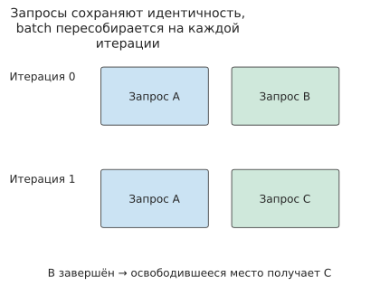
Рисунок 8-1. A продолжает выполняться на протяжении двух итераций. B завершается в первом раунде, а в следующем его вычислительную позицию занимает C (в каждом раунде для одного активного запроса выделяется одна строка вычислений); состояние каждого запроса по-прежнему сохраняется отдельно в соответствии с его идентичностью.
После поступления запрос сначала попадает в очередь ожидания. Модель начинает обрабатывать входные данные, то есть переходит к этапу prefill, только после того, как планировщик добавит запрос в batch и выделит пространство для KV. Поскольку все входные токены уже заданы, модель может одновременно вычислять несколько токенов и сохранять ключи и значения каждого слоя. После завершения вычислений для последнего токена промпта модель генерирует первый выходной токен.
Затем начинается этап decode. Модель использует только что сгенерированный токен как вход для следующего прямого прохода, считывает KV контекста и генерирует следующий токен. Для одного запроса эти шаги должны выполняться последовательно, однако текущие шаги разных запросов можно вычислять совместно. Поэтому, даже если отдельный запрос может генерировать токены только по одному, экземпляр всё равно способен повышать общую пропускную способность за счёт объединения запросов в batch.
На этой карте в эксперименте 8-1 отдельно выполняется короткий запрос с входом длиной 2K: этап prefill и возврат первого токена занимают около 0,096 секунды, после чего токены возвращаются в среднем с интервалом 26,5 ms. Если предположить, что запрос сначала проводит в очереди 0,1 секунды, пользователь получит первый токен через 0,196 секунды после поступления запроса. Для вывода 256 токенов требуется 255 выходных интервалов, поэтому полное время запроса составляет
Этот запрос успевает завершиться за 7 секунд. Если во время генерации вставить этап prefill другого короткого запроса, один из выходных интервалов увеличится примерно на 0,096 секунды — с 26,5 ms приблизительно до 123 ms, а полное время возрастёт до 7,05 секунды. Состав вычислений для каждого токена не изменился, однако одного лишь изменения порядка выполнения достаточно, чтобы запрос не уложился в срок.
На рисунке 8-2 эти 6,95 секунды представлены в виде временной шкалы. Момент возврата первого токена делит её на две части: предшествующие ему ожидание в очереди и обработка входных данных определяют, когда пользователь увидит ответ, а последующие 255 интервалов — когда он получит полный ответ. Все рассматриваемые далее оптимизации планирования можно понимать как изменение длины того или иного участка этой временной шкалы.
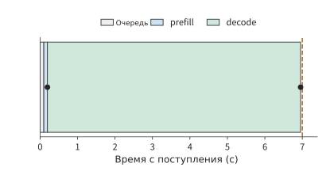
Рисунок 8-2. Запрос, выводящий 256 токенов. Ожидание в очереди занимает 0,1 секунды, prefill — 0,096 секунды, а каждый из последующих 255 выходных интервалов — 26,5 ms (измерено в эксперименте 8-1 при batch 1). Полоса построена в реальном временном масштабе, точками отмечены первый и последний токены; пунктирная линия на отметке 7 секунд обозначает предельный срок завершения.
После завершения запроса планировщик больше не назначает для него вычисления, а диспетчер состояния решает, как поступить с оставшимся KV. KV, принадлежащий только этому запросу, освобождается после его завершения, а KV общего префикса можно сохранить для повторного использования последующими запросами; дальнейшее управление им выполняет политика кэширования. В разделе 8.3 подробнее объясняется, когда эти кэши используются совместно, а когда освобождаются.
8.1.2 Требования к объёму хранения весов, KV и буферов среды выполнения¶
Чтобы несколько запросов могли продвигаться по собственным временным шкалам, экземпляр должен одновременно хранить веса, состояния запросов и промежуточные результаты вычислений. В примере этого раздела используется только одна карта, поэтому приводится только объём памяти на ней. Для многокарточного экземпляра необходимо отдельно составлять выражения для фрагментов весов, KV и буферов, хранящихся на каждой карте: свободную память одной карты можно использовать для вычислений на другой только после изменения размещения данных.
Обозначим через \(M_w\) объём постоянно размещённых в памяти весов, через \(M_{\mathrm{KV}}\) — общий объём физических блоков KV без повторно учитываемых ссылок (KV выделяется блоками фиксированного размера, а блок, совместно используемый несколькими запросами, учитывается только один раз), через \(M_a\) — объём активаций и обычных рабочих областей, а через \(M_u\) — объём других буферов, например для повторного выполнения вычислительного графа. Сумма этих объёмов памяти должна быть меньше или равна доступной ёмкости ускорителя \(C\):
Среди перечисленных потребителей памяти веса загружаются в неё ещё до поступления запросов, а KV непрерывно растёт по мере поступления запросов и генерации. Чтобы вычислить, сколько запросов экземпляр способен обрабатывать одновременно, сначала определим, какой объём KV требуется сохранять для каждого токена. Qwen3-8B содержит 36 слоёв, в каждом из которых имеется 8 KV-голов размерностью 128. Для каждого токена на каждом слое необходимо сохранять K и V, а каждый элемент BF16 занимает 2 bytes, поэтому требуемый объём KV на один токен равен
После ввода 2048 токенов KV занимает 288 MiB, а после ввода 8192 токенов — 1152 MiB. Все запросы совместно используют около 15,3 GiB весов, однако каждый дополнительный длинный запрос с независимым контекстом требует ещё 1,125 GiB KV. Только для хранения KV входных данных 16 длинных запросов потребуется 18 GiB, что превышает зарезервированные 12 GiB.1
Во время генерации выходных данных KV продолжает расти. Этап prefill создаёт первый выходной токен, после чего первые 255 выходных токенов последовательно возвращаются модели для генерации остальных 255 токенов. Для короткого запроса всего вычисляется \(2048+255=2303\) токена, а для длинного — \(8192+255=8447\) токенов. Если один блок вмещает 16 токенов, для них необходимо выделить пространство соответственно на 2304 и 8448 токенов.
| Независимый запрос | KV после prefill | Выделенный объём KV после вывода 256 токенов | Число запросов, одновременно помещающихся в 12 GiB |
|---|---|---|---|
| Короткий диалог | 288 MiB | 324 MiB | 37 |
| Длинный контекст | 1152 MiB | 1188 MiB | 10 |
Значения в последнем столбце получены соответственно как \(\lfloor12288/324\rfloor\) и \(\lfloor12288/1188\rfloor\). Если учитывать только размер KV на момент завершения prefill, в 12 GiB поместятся 42 коротких запроса; однако после генерации каждым из них 256 выходных токенов требуемый объём увеличится до 13 608 MiB. Резервирование пространства, необходимого на этапе генерации, ещё при приёме запроса позволяет избежать ситуации, когда нехватка памяти обнаруживается посреди выполнения.
Совместное использование общего префикса позволяет дополнительно экономить память. Первые 6144 токена длинного запроса занимают 864 MiB KV, а оставшаяся часть входных данных — 288 MiB. Если каждый из 16 запросов хранит префикс самостоятельно, в памяти окажутся 16 одинаковых копий KV; если же они ссылаются на один и тот же KV, освободившееся пространство можно использовать для индивидуальных суффиксов. В разделе 8.3 будет описан конкретный способ отображения блоков и рассчитан общий объём после завершения генерации.
8.1.3 От времени отдельного запроса к целевым показателям сервиса¶
Представим две части временной шкалы из раздела 8.1.1 в виде метрик, для которых можно задавать предельные значения. Пусть запрос поступил в момент \(t_a\) и всего вывел \(G\) токенов, а первый и последний токены были возвращены пользователю соответственно в моменты \(t_1\) и \(t_G\). Тогда
а \(j\)-й выходной интервал равен \(\mathrm{ITL}_j=t_{j+1}-t_j\). Сложив время до первого вывода и время после него, получим полное время запроса:
В примере из раздела 8.1.1 TTFT составляет 0,196 секунды, а суммарная длительность последующих 255 выходных интервалов — 6,76 секунды. Более короткий TTFT позволяет пользователю раньше увидеть ответ, равномерные выходные интервалы обеспечивают удобное непрерывное чтение, а полное время определяет, когда будет доступен весь ответ. SLO количественно выражает эти требования в виде предельных значений. В примере из начала главы полное время не должно превышать 7 секунд, а в примере с планированием также будет сравниваться максимальный выходной интервал.
Эти метрики относятся к отдельному запросу; общая производительность экземпляра зависит ещё и от числа одновременно обрабатываемых запросов, то есть от batch size (далее — batch). Пропускная способность показывает объём работы, выполненной за единицу времени. Когда в эксперименте 8-1 одновременно обрабатываются 16 запросов длиной 2K, каждый раунд decode движка занимает около 27,44 ms и выводит в общей сложности 16 токенов, поэтому пропускная способность генерации составляет приблизительно \(16/0.02744\approx583\) токенов/s; когда один запрос выводит по токену каждые 26,26 ms, это значение составляет лишь около 38. Увеличение числа токенов, выводимых за раунд, или сокращение длительности раунда повышает пропускную способность; фактическое время ожидания пользователя зависит также от того, сколько запрос провёл в очереди перед началом выполнения.
Для оценки эффективности сервиса необходимо также проверять правильность ответов. Фиксированная длина вывода позволяет сравнивать время выполнения при одинаковом объёме работы; если же разрешить модели завершать генерацию естественным образом, можно наблюдать за правильностью ответов, их длиной и числом повторных попыток. В разделе 8.6 будет рассчитано число правильных и своевременно завершённых запросов за единицу времени, что позволит одновременно оценить скорость и качество.
8.2 Пакетная обработка и планирование запросов¶
8.2.1 Как повторное использование весов повышает эффективность пакетной обработки¶
Рассмотрим умножение матриц \(Y=XW\), где входная матрица \(X\) содержит \(b\) строк. Один и тот же элемент весов участвует в вычислениях для всех строк, поэтому при совместной обработке нескольких строк после однократного чтения весов можно выполнить больше операций умножения со сложением. Предположим, что каждый элемент весов считывается внутри пакета только один раз, каждая операция умножения со сложением считается двумя операциями, а элемент весов занимает \(s_w\) байт. Если учитывать только чтение весов, арифметическая интенсивность равна
Для BF16 \(s_w=2\). Если увеличить число запросов, одновременно выполняющих один шаг decode, с 1 до 16, причём каждый запрос предоставляет один новый токен, а вектор признаков каждого токена занимает отдельную строку входной матрицы, то число строк матрицы увеличится с одной до 16, а объём вычислений на одно и то же чтение весов возрастёт в 16 раз. Разные запросы используют общую матрицу весов, однако при вычислении внимания для каждого из них по-прежнему требуется отдельно считывать KV собственного контекста.
Условие совместного использования состоит в том, что все запросы в пакете используют одни и те же веса. Низкоранговая адаптация (LoRA) ослабляет это условие: корректировка весов представляется произведением двух небольших матриц, а базовые веса остаются неизменными. Благодаря этому разные задачи могут совместно использовать одну базовую модель, добавляя лишь собственный небольшой adapter — адаптер, то есть модуль обучаемых параметров, подключаемый к базовой модели. Если для проекций Q и V модели Qwen3-8B использовать ранг 16 и BF16, один адаптер занимает 14,6 MiB, а 100 адаптеров — 1,43 GiB, что значительно меньше 14,1 GiB матричных весов.
Если запросы одного пакета используют разные адаптеры, общими остаются только базовые веса. Низкоранговые вычисления приходится группировать по адаптерам, причём число строк в каждой группе равно числу запросов данного пакета, относящихся к соответствующему адаптеру. Чем сильнее запросы распределены между адаптерами, тем меньше строк в каждой группе и тем хуже повторное использование весов в этой части. Поэтому количество разновидностей адаптеров и количество запросов в пакете — две величины, которые следует выбирать независимо.
Ёмкость также нужно рассчитывать раздельно. Сто адаптеров занимают 1,43 GiB, тогда как KV ста независимых контекстов длиной 8K в сумме занимают 112,5 GiB. Число размещаемых адаптеров определяется небольшими матрицами, а число одновременно обслуживаемых запросов — по-прежнему объёмом KV. Избыток ёмкости для первых не означает её избытка для вторых.10
Пусть объём матричных весов, которые за один раунд достаточно считать один раз, равен \(D_w\), каждый запрос содержит \(L\) токенов контекста, запросы не используют общий KV, а KV одного токена занимает \(k\). Тогда общий объём чтения за раунд и объём чтения в расчёте на один выходной токен соответственно равны
В объёме чтения на один выходной токен первое слагаемое представляет распределённое чтение весов, а второе — чтение KV контекста данного запроса. Для Qwen3-8B \(D_w\) составляет около 14,1 GiB, а KV контекста длиной 2K — 0,28125 GiB. При увеличении размера пакета с 1 до 16 чтение весов в расчёте на выходной токен снижается примерно до 0,88 GiB, а при увеличении до 64 — примерно до 0,22 GiB. На этом этапе на каждый выходной токен уже считывается больше KV, чем весов.1
На рис. 8-3 показано это изменение. Соседние отметки на горизонтальной оси соответствуют удвоению размера пакета, поэтому составляющая весов каждый раз уменьшается вдвое. Составляющая KV остаётся неизменной, а их сумма постепенно приближается к горизонтальной линии, соответствующей KV. При контексте длиной 2K увеличение пакета с 1 до 64 снижает объём чтения на один выходной токен примерно с 14,38 до 0,50 GiB, то есть приблизительно в 29 раз. Если увеличить длину контекста до 8K, объём KV возрастает в четыре раза, поэтому даже после объединения запросов в пакет для каждого выходного токена приходится считывать больше данных.
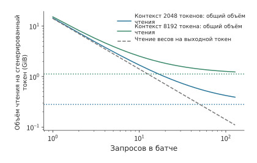
Рис. 8-3. Как пакетная обработка уменьшает объём чтения, необходимый для генерации одного токена. По горизонтальной оси отложено число одновременно генерируемых запросов, по вертикальной — объём байтов, считываемых для всего пакета, разделённый на число выходных токенов в текущем раунде. Синяя и зелёная сплошные линии соответствуют запросам с контекстом длиной 2048 и 8192 токена и учитывают чтение весов и KV; пунктирные горизонтальные линии тех же цветов показывают только объём чтения KV при соответствующей длине. Серая штриховая линия показывает объём чтения общих для пакета весов, разделённый на число запросов. Используется модель Qwen3-8B с BF16; каждый набор матричных весов считывается один раз за раунд, а KV запросов независимы. Обе оси имеют логарифмическую шкалу.
С увеличением размера пакета экономия от распределения чтения весов постепенно сокращается. Это изменение можно описать размером пакета, при котором объёмы чтения весов и KV становятся равными. Минимальный размер пакета, при котором объём чтения KV всего пакета достигает или превышает объём чтения общих весов, равен
При расчёте с использованием неокруглённого числа байтов весов для контекста длиной 2K получается 51, а для 8K — 13. Когда длина контекста увеличивается в четыре раза, объём чтения KV превосходит объём чтения весов уже при значительно меньшем размере пакета. В то же время более крупному пакету требуется больше памяти: веса и KV после одного шага decode для 64 запросов с контекстом длиной 2K в сумме занимают около 35,7 GB. Объединение в пакет уменьшает объём чтения на один выходной токен, но увеличивает объём одновременно размещённых данных.
Теперь оценим время, необходимое для этого чтения. Пусть объём вычислений для одного запроса равен \(F\), ускоритель выполняет \(P\) операций в секунду, а пропускная способность памяти равна \(\beta\). Оценим время одного раунда как максимум из отдельно рассчитанных времени вычислений и времени чтения:
Приравняв два слагаемых и преобразовав выражение, получим \(b(F/P-Lk/\beta)=D_w/\beta\). Добавление каждого запроса увеличивает время вычислений на \(F/P\), а время чтения KV — на \(Lk/\beta\). Если первое значение больше, то с увеличением размера пакета время вычислений догонит время чтения; в противном случае чтение всегда будет занимать больше времени. Приведённые выше значения 51 и 13 сравнивают объёмы чтения двух типов данных, тогда как это уравнение сравнивает ограничения времени выполнения, связанные с вычислениями и пропускной способностью памяти.
Оба слагаемых рассчитываются соответственно по пиковой вычислительной мощности и пиковой пропускной способности, поэтому результат представляет физическую нижнюю границу для данной карты в данных условиях. Отношения соответствующих нижних оценок времени вычислений и чтения к измеренному времени одного раунда — это соответственно MFU и MBU, определённые в разделе 1.2.2. В разделе 8.6.3 эти два отношения будут откалиброваны по пошаговым записям, а затем использованы в остальных расчётных примерах этой главы.
Применительно ко времени обработки запроса нужно также проверить, не задерживает ли увеличение пакета первый токен и не возрастает ли ожидание между соседними выходными токенами. В эксперименте со сканированием размеров пакета фиксировались оба изменения. При входе длиной 2K и выходе длиной 256 токенов для Qwen3-8B увеличение размера пакета с 1 до 64 повысило общую пропускную способность примерно с 37 до 1165 токенов/с, однако время возврата первого токена выросло примерно с 96 мс до 3,29 с, а средний интервал между выходными токенами — примерно с 27 до 40 мс. Хотя каждый раунд выдавал больше токенов, обработка большего объёма входных данных и выполнение более крупного пакета также занимали больше времени. В этом эксперименте все запросы пакета отправлялись одновременно. Если онлайн-сервис дополнительно ожидает заполнения пакета, это время также следует включать в задержку первого токена.3
Упражнение 8-1 · Расчёт: изменение объёма чтения при увеличении размера пакета. Примите \(D_w=15,136,811,008\) байт и \(k=144\) KiB. Рассчитайте объём чтения на один выходной токен для контекстов длиной 2K и 8K при размерах пакета 1, 4, 16 и 64, а также для каждой из двух длин контекста найдите минимальный целый размер пакета, при котором объём чтения KV впервые достигает или превышает распределённый объём чтения весов. Затем, используя 12 GiB доступной памяти для KV, блоки по 16 токенов и выход длиной 256 токенов, найдите максимальное число независимых запросов, которое можно принять при каждой из двух длин контекста. Сравните верхний предел числа размещаемых запросов с размером пакета, при котором объёмы чтения двух типов становятся равными, и определите, помешает ли ограничение ёмкости дальнейшему увеличению пакета раньше этого момента.
Если веса предоставляются достаточно быстрым независимым хранилищем, время их чтения сокращается, поэтому выигрыш от пакетной обработки необходимо пересчитать. Используем пример с контекстом 8K из главы 4: пусть \(W\) — число байтов весов, считываемых для всего пакета, \(B\) — число запросов в пакете, а \(K\) — число байтов KV, считываемых на текущем шаге для одного запроса. В традиционной схеме объём чтения из HBM в расчёте на один выходной токен равен \(W/B+K\). Если веса предоставляются достаточно быстрым независимым ROM, то на каждый выходной токен из HBM по-прежнему требуется считывать \(K\).30 На рис. 8-4 расстояние между двумя кривыми сокращается с увеличением размера пакета: это означает, что прежний выигрыш от распределения чтения весов между запросами пакета исчезает.
Тем не менее размер пакета по-прежнему влияет на загрузку вычислительных блоков при матричных операциях и на объём чтения KV внутри пакета. Подставив новый объём чтения в приведённую выше модель времени, можно найти точку пересечения ограничений вычислений и чтения KV, а затем выбрать размер пакета с учётом задержки первого токена и интервала между выходными токенами.
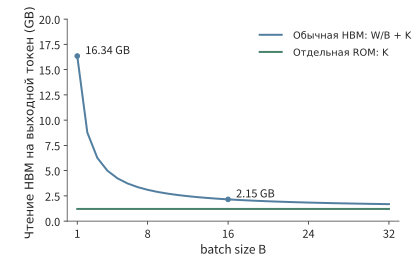
Рис. 8-4. Распределённый объём чтения из HBM на один выходной токен. При фиксированном контексте длиной 8K традиционному пути соответствует \(W/B+K\), а пути с независимым быстрым ROM — \(K\). Значения по вертикальной оси рассчитаны по приведённым выше формулам. \(W\) — число байтов весов, считываемых для всего пакета, \(B\) — число запросов в пакете, \(K\) — число байтов KV, считываемых на текущем шаге для одного запроса; \(W/B+K\) — распределённый объём чтения на один выходной токен.
8.2.2 От фиксированного пакета к непрерывной пакетной обработке¶
Два запроса одновременно начинают генерацию: одному требуется восемь токенов, другому — только два. После завершения короткого запроса длинному предстоит выполнить ещё шесть шагов. Если принимать следующую группу только после завершения обоих запросов, освободившаяся позиция короткого запроса всё это время будет простаивать. Фиксированная пакетная обработка принимает и завершает запросы целыми группами, тогда как непрерывная пакетная обработка перераспределяет активные запросы на границах итераций и принимает новые запросы сразу после освобождения позиций.
Анализ размера пакета в разделе 8.2.1 предполагает, что в одном раунде участвуют \(b\) запросов, однако фактическое число строк изменяется по мере завершения и добавления запросов. Позиция выполнения на рис. 8-1 соответствует здесь одной строке вычислений и представляет другой ресурс, нежели слот для регистрации коммуникационного запроса из главы 7. От своевременного добавления новых запросов зависит, сколько строк сможет участвовать в следующем раунде вычислений.
Более раннее включение нового запроса также означает, что обработка его входа раньше займёт ускоритель. Если у нового запроса длинный промпт, prefill увеличит время ожидания между двумя шагами decode уже выполняющихся запросов. Поэтому планировщик должен распределять время ускорителя между двумя задачами: обработкой входа новых запросов и продолжением генерации уже выполняющихся.4
Расчётный пример: почему непрерывная пакетная обработка сокращает общее время, но увеличивает интервал между выходными токенами? Одновременно могут выполняться не более двух запросов. r0 и r1 поступают в нулевой момент времени; каждый содержит 2048 входных токенов, а их выходы составляют соответственно 8 и 2 токена. r2 поступает через 20 мс, содержит 8192 входных и 2 выходных токена. r3 поступает через 30 мс, содержит 2048 входных и 4 выходных токена. Время каждого раунда аппроксимировано по измерениям эксперимента 8-1 для пакета размера 1: фиксированные 26,22 мс, дополнительно 30,4 мкс на каждый новый токен и 3 нс на каждую причинно допустимую пару запроса и ключа. Эти параметры воспроизводят время одного раунда decode 26,26 мс и время prefill 94,8 мс при отдельном выполнении запроса длиной 2K. Фиксированная часть — это не зависящее от числа токенов время одного раунда, включающее чтение всех весов, которое при пиковой пропускной способности 1792 GB/s занимает около 8,4 мс, а также накладные расходы на последовательный запуск ядер и другие операции.5
При фиксированном пакете r2 и r3 ожидают завершения всей группы r0 и r1, поэтому общее время составляет около 870 мс. Непрерывная пакетная обработка принимает r2 после завершения r1 и сокращает общее время примерно до 766 мс, однако следующий выход r0 должен ждать завершения prefill длиной 8K для r2, поэтому максимальный интервал между выходными токенами увеличивается примерно с 26 до 376 мс. Общее время сокращается примерно на 12%, но одна пауза в выдаче возрастает в 14 раз.
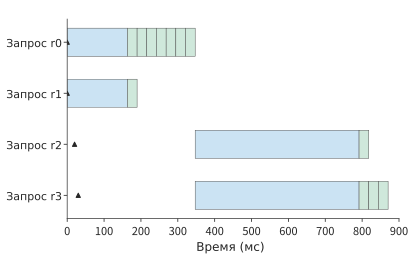
Рис. 8-5. Фиксированный пакет ожидает завершения всей группы и только затем принимает r2 и r3. Синим показан prefill, зелёным — decode, треугольниками — моменты поступления запросов. Ширина каждой цветной полосы соответствует длительности всей итерации планирования и рассчитана по аппроксимации измерений на RTX PRO 6000.
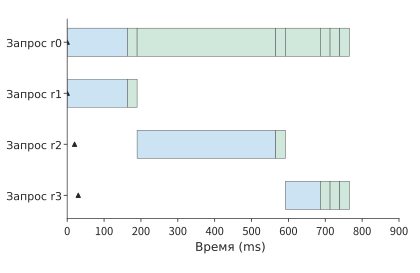
Рис. 8-6. Непрерывная пакетная обработка принимает r2 после завершения r1. Каждая строка соответствует одному запросу; синим показана обработка входа (prefill), зелёным — генерация выхода (decode), треугольниками — моменты поступления запросов, а ширина цветной полосы соответствует длительности содержащей её итерации планирования. r0 ожидает обработки входа r2 длиной 8K, поэтому максимальный интервал между выходными токенами увеличивается примерно до 376 мс; все запросы завершаются примерно за 766 мс.
Теперь дополнительно разделим prefill r2 на блоки по 2048 токенов и будем обрабатывать не более 4096 токенов за раунд, как в эксперименте 8-1. В каждом раунде сначала продолжим decode уже выполняющихся запросов, а затем обработаем часть входа. Максимальный интервал между выходными токенами сократится примерно до 133 мс, а общее время завершения всех запросов составит около 844 мс. После разделения на блоки планировщик может чаще продолжать генерацию уже выполняющихся запросов, благодаря чему интервалы между выходными токенами становятся равномернее.
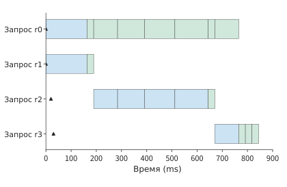
Рис. 8-7. Длинный вход обрабатывается блоками: в каждом раунде сначала планируется генерация для уже выполняющихся запросов, а затем обрабатывается один блок нового входа. Каждая строка соответствует одному запросу; синим показана обработка входа, зелёным — генерация выхода, треугольниками — моменты поступления запросов. Разделение на блоки сокращает максимальный интервал между выходными токенами примерно до 133 мс, а все запросы завершаются примерно за 844 мс. Горизонтальная ось использует тот же масштаб времени, что и на рис. 8-5 и 8-6.
8.2.3 Влияние длинного prefill на генерацию и блочное выполнение¶
Чем крупнее блок prefill, обрабатываемый за один раз, тем меньше раундов обработки входа требуется новому запросу. Чем меньше блок, тем раньше уже выполняющиеся запросы получают следующую возможность выполнения. Обычно планировщик сначала запускает запросы, находящиеся на этапе decode, а остаток лимита токенов текущего раунда использует для prefill. Таким образом, вычисление длинного входа распределяется между несколькими интервалами выдачи.
Даже при одинаковой длине блока объём вычислений внимания увеличивается с ростом контекста. Пусть текущий блок содержит \(c\) новых токенов, а длина существующего контекста равна \(h\). Первый новый токен обращает внимание на \(h+1\) токенов, второй — на \(h+2\), а последний — на \(h+c\). Просуммируем число этих пар:
Слагаемое \(ch\) соответствует обращениям новых токенов к старому контексту, а треугольное слагаемое — причинному вниманию внутри блока. При \(c=512\) все 131 328 пар первого блока образуются внутри самого блока. В последнем блоке входа длиной 8K уже имеется 7680 токенов контекста, поэтому число пар возрастает до 4 063 488, что примерно в 31 раз больше, чем для первого блока.
На рис. 8-8 число пар показано в виде площади: каждый новый токен должен обращаться ко всему старому контексту, образуя прямоугольник слева; внутри блока он может обращаться только к текущей и предшествующим позициям токенов, образуя треугольник справа. При фиксированной длине блока правый треугольник не изменяется, а левый прямоугольник расширяется с ростом контекста. Именно поэтому последнему блоку требуется больше вычислений внимания.
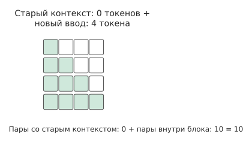
Рис. 8-8. При первой обработке четырёх токенов старого контекста нет, поэтому присутствуют только причинно допустимые пары внимания между новыми токенами, образующие 1 + 2 + 3 + 4 = 10 зелёных ячеек. Белые ячейки соответствуют будущим токенам и не учитываются при вычислении внимания для текущей позиции.
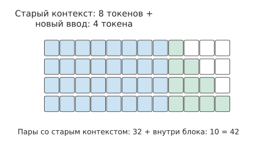
Рис. 8-9. При существующем контексте из восьми токенов четыре новых токена образуют со старым контекстом 4 × 8 = 32 синие ячейки, а внутри блока по-прежнему остаются 10 зелёных ячеек. При одинаковой длине блока общее число пар возрастает с 10 до 42.
Модель также выполняет проекции и FFN. Эти преобразования признаков производятся отдельно для каждого токена, поэтому в каждом блоке обрабатываются 512 новых токенов и объём работы остаётся практически одинаковым. Согласно имеющимся пошаговым записям, объём матричных операций основного тракта модели в последнем блоке примерно на 32% больше, чем в первом, а медиана времени выполнения возрастает примерно с 25,3 до 35,1 мс, то есть приблизительно на 39%. Поэтому время выполнения всего блока определяется двумя составляющими: одна изменяется преимущественно с числом новых токенов, а другая дополнительно возрастает с длиной существующего контекста.6
Рост контекста объясняет, почему блоки одинакового размера становятся всё медленнее. Уменьшение длины блока создаёт другой вид накладных расходов. Если разделить один блок из 256 токенов на два блока по 128 токенов, появляется одна дополнительная возможность планирования, число строк матрицы уменьшается вдвое, но каждый небольшой блок должен использовать один и тот же набор весов. Например, если веса одного слоя FFN занимают 288 MiB и в обоих запусках считываются из видеопамяти, объём этого чтения возрастёт с 288 до 576 MiB. Малые блоки позволяют уже выполняющимся запросам раньше получить следующую возможность выполнения, но одновременно увеличивают число запусков. Планировщику следует выбирать максимально крупный блок, удовлетворяющий требованиям к интервалу между выходными токенами, чтобы минимизировать число дополнительных запусков и чтений.7
8.2.4 Бюджет токенов, динамические формы и время выполнения¶
Планировщик обычно задаёт верхний предел числа обрабатываемых за раунд токенов, называемый бюджетом токенов. Примером служит предел в 4096 токенов за раунд из расчётного примера с разделением на блоки в разделе 8.2.2. При фактическом выполнении векторы признаков этих токенов нужно объединить в матрицу и выбрать ядро либо заранее захваченный CUDA Graph (раздел 5.5.2). Реальная матрица выполнения может быть больше, чем требуется в текущем раунде, поэтому уменьшение объёма работы на один токен не обязательно сокращает вычисления на соответствующую величину.
Например, можно заранее захватить графы вычислений на 16 и 32 строки, дополняя до 32 строк любой вход размером от 17 до 32 строк. При сокращении работы с 18 до 17 строк всё равно выполняется граф на 32 строки. Только после сокращения с 17 до 16 строк можно использовать меньший граф. Если отдельно захватить граф для 17 строк, можно избежать дополнения на 15 строк, однако подготовка такого графа требует времени, а используемые при его воспроизведении буферы будут постоянно занимать память. Поэтому при выборе предустановленных форм CUDA Graph необходимо также учитывать накладные расходы памяти среды выполнения, рассмотренные в разделе 8.1.
Форма выполнения определяет длительность раунда, а лимит токенов — объём работы для новых запросов, выделяемый в этом раунде. Увеличение лимита позволяет раньше завершить обработку длинного входа, однако уже выполняющиеся запросы смогут продолжить выдачу только после окончания раунда. В записи воспроизведения шести запросов новый запрос поступал каждые 80 мс. При увеличении лимита токенов на раунд с 512 до 8192 время ожидания поздних запросов в очереди движка сократилось примерно со 149 мс до значения менее 0,1 мс, однако максимальный интервал между выходными токенами вырос примерно с 32 до 183 мс. Чем выше лимит, тем больше входных данных обрабатывается за один раунд и тем раньше новый запрос покидает очередь, но тем дольше уже выполняющиеся запросы ждут следующего выходного токена.8
Поэтому число обрабатываемых за раунд токенов можно определять в два этапа. Сначала на основании допустимого интервала между выходными токенами нужно установить максимальную длительность одного раунда, а затем, с учётом длины контекста и предустановленных форм выполнения, пересчитать её в число новых токенов, которые можно обработать. За одинаковое время для запроса с более длинным контекстом можно обработать меньше новых токенов, а для запроса с более коротким контекстом — использовать более крупный блок. После определения порядка выполнения необходимо выделить этим запросам пространство KV. В следующем разделе рассматривается распределение и повторное использование этой памяти.
Упражнение 8-2 · Основное · Анализ: определение размера блока prefill по ограничению интервала между выходными токенами. Используя четыре запроса и модель времени выполнения из раздела 8.2.2, вручную рассчитайте длительность первоначального
prefillи следующего шагаdecodeдля r0 и r1, а затем длительность раунда, в котором непрерывная пакетная обработка принимает r2. Объясните происхождение максимального интервала между выходными токенами. При фиксированной длине нового блока \(c=512\) рассчитайте число пар внимания для длин существующего контекста \(h=0\) и \(h=7680\). Наконец, проанализируйте соответствующую запись воспроизведения шести запросов, выберите лимит токенов на раунд отдельно для целей «максимальный интервал менее 50 мс» и «как можно более ранний приём поздних запросов» и укажите, какая составляющая времени определяет выбор.
8.3 Распределение, повторное использование и освобождение KV-кэша¶
8.3.1 Резервирование, фрагментация и страничное распределение¶
В разделе 8.1 для каждого запроса резервировалось пространство исходя из максимальной длины вывода, чтобы запрос мог непрерывно генерировать токены. Если запрос завершается раньше, конец зарезервированного пространства остаётся неиспользованным. Другой подход — постепенно расширять память по мере генерации, но если пространство должно оставаться непрерывным, то при занятой другими запросами соседней области придётся переносить данные или ждать.
Такое распределение можно сравнить с разъёмной папкой: порядок чтения определяется номерами страниц, но сами страницы необязательно должны находиться рядом — достаточно помнить, где находится каждая из них. Когда последовательность растёт, новую страницу можно поместить в любое свободное место и записать её расположение, не перемещая всё содержимое папки ради непрерывного размещения.
Страничное распределение делит последовательность на блоки фиксированного размера. Логические блоки нумеруются по позициям токенов в последовательности и соответствуют номерам страниц; физические блоки — это области памяти, в которых фактически хранится KV; поддерживаемая для каждого запроса таблица блоков указывает, какому физическому блоку соответствует каждый логический блок. Когда последовательность вырастает настолько, что требуется новый блок, движок выделяет физический блок из пула свободных блоков и добавляет отображение. При вычислении внимания нужные позиции KV находятся по таблице блоков, поэтому физические блоки могут храниться раздельно. Здесь рассматривается блочная адресация KV в памяти; подкачка между уровнями хранения обсуждается в разделах 8.3.4 и 8.4.3.
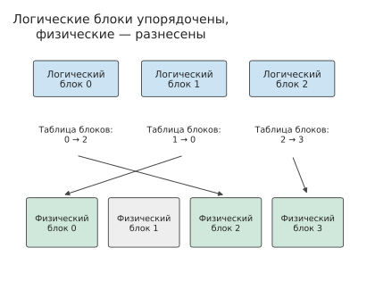
Рисунок 8-10. Логические блоки 0, 1 и 2 последовательно образуют последовательность, а таблица блоков указывает соответственно на физические блоки 2, 0 и 3. Физический блок 1 свободен; логический порядок восстанавливается для вычисления внимания по таблице блоков.
Пусть каждый блок может хранить KV для \(p\) токенов, а текущая длина равна \(L\). Тогда требуется \(\lceil L/p\rceil\) блоков. Неиспользованные слоты KV остаются только в конце последнего блока, а потери составляют
то есть не более пространства KV для \(p-1\) токенов. Чем меньше блоки, тем ниже эта верхняя граница, но тем больше записей в таблице блоков и операций распределения. В 2023 году исследователи из Беркли и других организаций представили в vLLM технологию PagedAttention, применив к KV-кэшу принципы страничного управления памятью из операционных систем, чтобы снизить влияние резервирования и фрагментации памяти на параллельную обработку запросов сервисом. PagedAttention переносит такое отображение в выполнение внимания, тогда как FlashAttention организует блочные вычисления и промежуточные результаты внутри оператора. Таким образом, первая технология управляет распределением состояния, а вторая — вычислениями и обращениями к памяти.
Пример расчёта: насколько страничное распределение KV сокращает резервируемое пространство? Пусть текущие длины A, B, C и D равны соответственно 9, 13, 5 и 15, а для каждой последовательности разрешено не более 16 токенов. При резервировании целыми сегментами четыре запроса совместно резервируют пространство KV для 64 токенов. При \(p=4\) страничное распределение выделяет им пространство соответственно для 12, 16, 8 и 16 токенов — всего для 52 токенов. При этом фактически сохранённый KV по-прежнему соответствует 42 токенам, а неиспользованная ёмкость сокращается с 22 до 10 токенов.
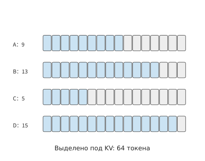
Рисунок 8-11. Четыре запроса содержат соответственно 9, 13, 5 и 15 токенов. Для каждого резервируется пространство KV на 16 токенов, поэтому суммарно выделяется пространство на 64 токена. Синим показано используемое пространство, серым — зарезервированное, но неиспользуемое.
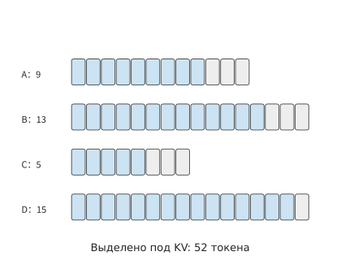
Рисунок 8-12. При распределении пространства KV блоками по 4 токена четыре запроса получают ёмкость соответственно на 12, 16, 8 и 16 токенов — всего на 52 токена. Серым показана неиспользованная ёмкость в конце блоков, которая сократилась с 22 до 10 токенов.
Если первые восемь токенов A и B совпадают, они могут совместно использовать два полных блока, что дополнительно снижает общий объём выделенного пространства до 44 токенов. Страничное распределение сокращает ещё не использованное зарезервированное пространство, а совместное использование устраняет повторное хранение контекста. Эти механизмы экономят разные части памяти.
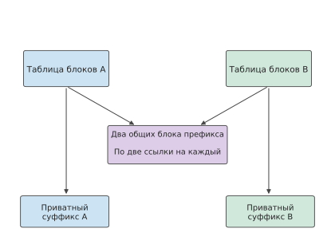
Рисунок 8-13. Два общих префиксных блока A и B сохраняются только один раз, а таблицы блоков обоих запросов ссылаются на них. У A и B остаются собственные хвостовые блоки; фактически выделенная для четырёх запросов ёмкость KV дополнительно сокращается до 44 токенов.
8.3.2 Совместное использование ветвями, копирование при записи и освобождение памяти¶
На схеме совместного использования префикса B и A ссылаются на одни и те же два физических блока. Если A завершится первым, эти два блока всё равно нужно сохранить для B; если B потребуется изменить их содержимое, это не должно повлиять на A. Для реализации совместного использования необходимо определить, когда освобождать общие блоки и как предотвращать перезапись данных разными запросами. Каждая запись таблицы блоков, указывающая на физический блок, называется ссылкой; на общий блок ссылаются несколько таблиц блоков. Счётчик ссылок показывает, скольким пользователям он ещё нужен. Когда запрос получает ссылку, её счётчик увеличивается на единицу; при завершении запроса ссылка освобождается. Блок может вернуться в пул свободных блоков только после освобождения последней ссылки; кроме того, к этому моменту нужно убедиться, что операции ускорителя больше к нему не обращаются. Благодаря этому одна копия общего контекста может обслуживать несколько ветвей и продолжать обслуживать оставшиеся ветви после завершения одной из них.
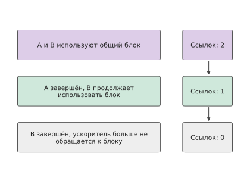
Рисунок 8-14. После завершения A счётчик ссылок уменьшается с 2 до 1, и B по-прежнему может использовать блок. Блок возвращается в пул свободных блоков только после освобождения последней ссылки и завершения работы ускорителя с ним.
Для записи в общий хвостовой блок необходимо получить отдельную копию. Например, в блок, вмещающий KV четырёх токенов, уже записаны KV трёх общих токенов, а затем две ветви должны записать разные токены. Если писать в исходный блок, обе ветви будут конкурировать за четвёртый токен в блоке. Копирование при записи — это механизм получения собственной копии перед изменением общего содержимого. В данном случае сначала копируются эти три токена, после чего каждая ветвь отдельно добавляет свой токен; уже заполненные доступные только для чтения блоки продолжают использоваться совместно. По мере роста ветвей общий префикс хранится в одном экземпляре, а каждая ветвь отдельно сохраняет добавленный ею суффикс.
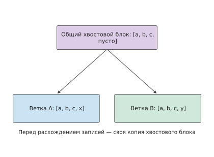
Рисунок 8-15. В хвостовой блок размером 4 токена уже записаны общие a, b и c. Ветви добавляют соответственно x и y, поэтому им требуются разные физические хвостовые блоки; ранее заполненные блоки продолжают использоваться совместно.
В проведённом ранее эксперименте с четырьмя ветвями общий префикс занимает 95 блоков, а каждая ветвь дополнительно использует 9 собственных блоков. Четыре таблицы блоков содержат в общей сложности \(4(95+9)=416\) ссылок, но фактическое число физических блоков равно лишь
При независимом хранении потребовалось бы 416 блоков, поэтому совместное использование сокращает их число примерно на 69%. Эта экономия достигается за счёт устранения дублирования общего префикса; при четырёх ветвях остаются 36 собственных хвостовых блоков, и в общем случае их число по-прежнему растёт вместе с числом ветвей.9
Система обслуживания знает, какие токены относятся к общему префиксу, а какие после ветвления будут записываться независимо, поэтому может воплотить отношения повторного использования модели в совместном использовании физических блоков. Таблица блоков отвечает за отображение адресов, отношения между префиксами определяют область совместного использования, а собственная копия создаётся только при записи в ветвь. Таким образом, пространство, ранее независимо резервировавшееся для каждого запроса целиком, начинает распределяться в соответствии с фактически создаваемым и повторно используемым состоянием.
Полная ёмкость KV для пакета после совместного использования общего префикса. 16 длинных запросов совместно используют первые 6144 входных токена, KV которых занимает в общей сложности 864 MiB. Собственная часть каждого запроса содержит \(8192-6144+255=2303\) токена. При распределении блоками по 16 токенов требуется вместить 2304 токена, то есть 324 MiB. Поэтому после завершения генерации всей группой запросов необходимое пространство KV составляет
Ранее этой группе запросов требовалось \(16\times1188=19008\) MiB, а после совместного использования — около 5,91 GiB, что помещается в зарезервированные 12 GiB памяти. В общем случае \(b\) однотипных длинных запросов занимают \(864+324b\) MiB, поэтому предел ёмкости увеличивается с 10 независимых запросов до 35 запросов с совместным использованием.
После использования блоки необходимо корректно освободить, чтобы передать последующим запросам. Для освобождения памяти должны одновременно выполняться два условия: ни один пользователь больше не удерживает ссылку, а уже отправленные операции ускорителя больше не обращаются к блоку. После отмены запроса пользователем планировщик перестаёт назначать новые вычисления, ожидает завершения уже отправленных операций, а затем освобождает собственные блоки. В одном наблюдении вызов отмены вернулся примерно через 1,6 ms, но соответствующие 104 блока были освобождены лишь примерно через 31 ms. Последующие запросы начинают использовать эти блоки после освобождения и потому не перезаписывают данные, которые ещё читает старый запрос.29
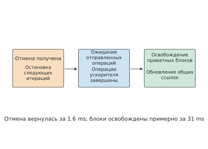
Рисунок 8-16. Возврат из интерфейса отмены означает, что запрос на отмену принят. Собственные блоки и связанные ссылки освобождаются после завершения уже отправленных операций ускорителя; наблюдавшиеся значения 1,6 ms и 31 ms относятся к разным событиям.
Помимо обычного освобождения после завершения или отмены запроса, при нехватке памяти движок может вытеснить запрос: приостановить его и освободить KV, а затем повторно вычислить состояние по сохранённым входным и выходным данным. В одной и той же серии экспериментов при использовании пула KV размером 1 GiB произошло одно вытеснение, из-за которого по сравнению с обычным выполнением пришлось дополнительно запланировать обработку 1805 токенов; с пулом размером 2 GiB этого повторного вычисления не было. Вытеснение временно освобождает память для других запросов, но при возобновлении выполнения приходится повторять вычисления.9
Упражнение 8-3. Расчёт: как размер блока KV и совместное использование префикса влияют на ёмкость. Разбейте четыре последовательности длиной 9, 13, 5 и 15 на страницы по 2, 4 и 8 токенов. Для каждого варианта вычислите число неиспользованных слотов KV в хвостовом блоке каждой последовательности, а затем общее число неиспользованных слотов KV и записей в таблицах блоков. Затем по примеру расчёта в начале главы определите полную ёмкость для 8, 16 и 32 длинных запросов при независимом и совместном хранении состояния. Сохраняя общую длину каждого запроса неизменной, сделайте один ранее собственный полный блок частью общего префикса и определите, на сколько физических блоков меньше потребуется выделить в общей сложности для \(b\) запросов.
8.3.3 Повторное использование префиксов в диалогах и AI-агентах¶
В разделе 8.3.2 было рассчитано, как одновременно выполняемые запросы могут совместно использовать физические блоки. Такое совместное использование может продолжаться и после завершения запроса: оставшийся от старого запроса KV префикса позволяет последующему запросу не вычислять повторно тот же фрагмент входных данных. Если префикс последующего запроса полностью совпадает и используются те же модель, правила позиционного кодирования, адаптер и формат состояния, можно напрямую применить сохранённый в кэше KV и продолжить prefill с конца префикса. Общий префикс из примера в начале главы содержит 6144 токена; при попадании в кэш для каждого длинного запроса потребуется обработать лишь оставшиеся 2048 входных токенов, после чего можно начинать генерацию.
Такое повторное использование непрерывно распространяется вдоль префикса. Предположим, у двух промптов совпадают первые 100 токенов, а 101-й различается. Даже если последующий текст снова совпадает, начиная со 101-го токена он уже зависит от разных контекстов. Если поместить динамическую временную метку в начало промпта, расположенные далее длинные общие определения инструментов нельзя будет использовать повторно. Если же сначала разместить стабильный системный промпт и определения инструментов, а затем добавить изменения текущего раунда, сохранится более длинный общий префикс.11
Префиксное дерево непосредственно выражает эту структуру: путь от корня до точки ветвления представляет общий контекст, а пути от точки ветвления до листьев — собственные суффиксы. Первые четыре раунда входных данных на рисунке 8-17 сначала совместно используют 206 токенов, а следующие три продолжают тот же путь. Рёбра дерева помечены числом добавленных токенов, а листья указывают полную длину входных данных.
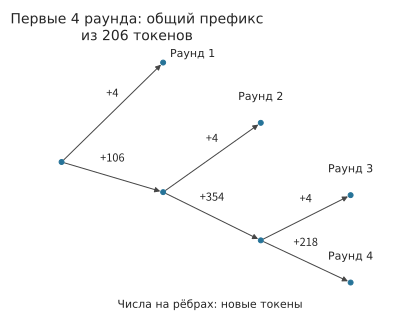
Рисунок 8-17. Сжатое префиксное дерево первых четырёх раундов входных данных агента, работающего с кодом. В корне уже имеется 206 общих токенов, на рёбрах указано число добавленных токенов, а листья соответствуют раундам ввода. Ветвление означает различие последующего содержимого.
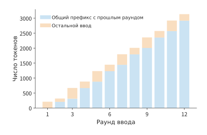
Рисунок 8-18. Синим показан префикс, совпадающий с предыдущим раундом токен за токеном, оранжевым — остальная часть входных данных. Рисунок отражает степень потенциального повторного использования содержимого; фактическое попадание в кэш зависит также от того, сохранилось ли состояние.
Добавление содержимого в конец каждого раунда позволяет сохранить существующий общий префикс, но чем длиннее контекст, тем больше объём KV и объём последующего чтения.
Расширение: как модель с гибридным вниманием определяет позицию восстанавливаемого префикса. Полное внимание сохраняет KV для каждого токена, тогда как рекуррентная модель обычно сохраняет только текущее состояние. Пусть текст совпадает до токена 10 752, а рекуррентные снимки сохранены на токенах 4096 и 8192. Система восстанавливает состояние с позиции 8192, а затем вычисляет его до позиции 10 752, повторно обрабатывая 2560 токенов. Дополнительные снимки позволяют сократить число повторно вычисляемых токенов, но требуют хранения большего объёма состояния. Например, для представленной в главе 2 KDA одна из реализаций распределяет внутрислойные тензоры по восьми картам (TP=8). В этом случае один снимок занимает на каждой карте около 53,6 MiB, два снимка — около 107 MiB, а 32 снимка — около 1714 MiB. Чем чаще сохраняются снимки, тем меньше токенов приходится повторно вычислять при восстановлении, но тем больше сохраняется состояния.12
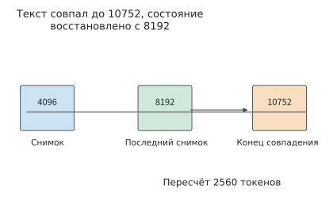
Рисунок 8-19. Текст совпадает до позиции 10 752, а последний снимок состояния находится на позиции 8192. После восстановления всё ещё требуется повторно вычислить 2560 токенов, чтобы получить рекуррентное состояние в конце совпавшего фрагмента. Значения 10 752 и 8192 на рисунке — это накопленное от начала последовательности число токенов.
Оркестрация контекста также может целенаправленно изменять возможности повторного использования. Предположим, уже имеется контекст из 8K токенов, а в следующем раунде добавляется результат работы инструмента размером 1K токенов. В этом случае можно повторно использовать прежний префикс длиной до 8K и обработать только добавленную часть. Если же переписать инструкции в самом начале, последующее содержимое нельзя будет повторно использовать, даже если текст совпадает. Другой вариант — свести историю к резюме объёмом 2K токенов, а затем добавить ещё 1K. После замены исходной истории резюме последующие вычисления используют более короткий контекст, но возникают дополнительные затраты на создание резюме и повторную обработку. Поэтому при организации контекста необходимо одновременно учитывать объём памяти, время повторных вычислений и объём последующего чтения.
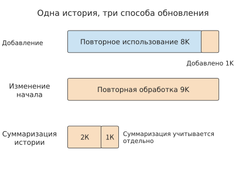
Рисунок 8-20. Три способа обновления одной истории. Синим показан повторно используемый префикс, оранжевым — входные данные, которые требуется обработать заново; в варианте с резюме сначала создаётся резюме, а затем заново строится кэш. Длина условно указана в K токенов.
Повторное использование префикса на стороне модели требует более детального различения состояний. При повторном использовании префикса DeepSeek V4.1 отдельно обрабатывает два типа локального состояния. Представленная в главе 2 структура CED содержит каузальный кодировщик и декодировщик, у каждого из которых имеется локальное состояние SWA: SWA кодировщика можно кратковременно хранить в пуле DRAM хоста, чтобы в следующем раунде продолжить обработку новых входных данных вдоль существующего префикса; SWA декодировщика используется только для последующей генерации в текущем раунде, и в описанном в статье развёртывании оно не сохраняется в качестве кэша префикса. Глобальный KV помещается в кэш для более длительного повторного использования. Поэтому ёмкость резидентного во время генерации SWA 40 слоёв и ёмкость сохраняемого между раундами кэша префикса необходимо рассчитывать отдельно.31
Попадание этих двух типов состояния в кэш определяет, какую часть префикса кодировщику придётся восстанавливать в следующем раунде. Предположим, после возврата результата инструментом необходимые для восстановления токены или входные представления по-прежнему доступны, а версия модели, индексы позиций токенов и входные данные не изменились. Если в кэш попали и глобальный KV, и SWA кодировщика, кодировщик напрямую обрабатывает добавленные входные данные. Если попал только глобальный KV, кодировщик повторно обрабатывает не более 128 последних токенов сохранённого в кэше префикса вместе с отсутствующим в кэше суффиксом. Повторная обработка восстанавливает SWA кодировщика, при этом существующий глобальный KV продолжает использоваться; новый суффикс создаёт новые глобальный KV и SWA. Если же нет попадания и по глобальному KV, отсутствующий префикс вычисляется заново.
Затем каждый prefill включает общий этап: берутся выходные данные кодировщика не более чем для 128 последних токенов полного промпта и пропускаются через 20 слоёв декодировщика, приблизительно формируя SWA декодировщика и подготавливая локальное состояние для первого шага decode. Поэтому при полном попадании состояния кодировщика в кэш можно избежать восстановления префикса кодировщика, но декодировщику всё равно необходимо повторно обработать окно.
Состояние, полученное короткой повторной обработкой окна, восстанавливается приближённо: ошибка возникает из-за отсечения более ранних локальных зависимостей. Хотя каждый слой обращается только к последним 128 токенам, при наложении нескольких слоёв локальное состояние всё равно может косвенно зависеть от более ранних входных данных через предыдущий слой. Повторное выполнение от границы окна изменяет эту часть исторической информации. Поэтому в разделе 3.2.2 технического отчёта восстановленное состояние кодировщика определяется как приближённое; оно участвует в последующих вычислениях, из-за чего глобальный KV и SWA нового суффикса зависят от начальной точки восстановления.
Различие между этими двумя типами состояния в конечном счёте отражается на ёмкости кэша. При нагрузке и стратегии кэширования из технического отчёта DeepSeek V4 SWA занимает около половины долговременного кэша. В V4.1 эта часть удалена из постоянного кэша, а глобальный KV сжат примерно до четверти прежнего объёма, поэтому долговременное хранилище составляет около \(1/2\times1/4=1/8\) исходного. Кратковременно сохраняемое SWA кодировщика размещается в DRAM, а SWA декодировщика остаётся на ускорителе во время генерации текущего раунда. Разделение кэша по уровням хранения в зависимости от периода использования дополнительно снижает требования к долговременной ёмкости.
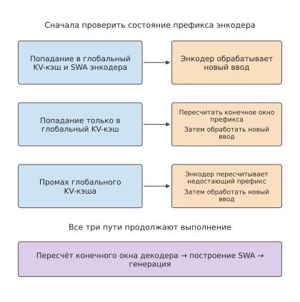
Рисунок 8-21. Три пути восстановления префикса кодировщика и общая повторная обработка декодировщиком. SWA в состоянии попадания в кэш относится только к кодировщику; при любом пути во время prefill по-прежнему строится SWA декодировщика, после чего начинается генерация. Стрелки обозначают порядок выполнения, а размеры блоков не отражают затраченное время.
8.3.4 Допуск в кэш, вытеснение, выгрузка и повторное вычисление¶
Префикс сохраняется после завершения запроса, чтобы избежать повторных вычислений при его будущем использовании. Пусть вероятность повторного использования префикса равна \(p_h\), время повторного вычисления — \(T_r\), время получения состояния из кэша и его подготовки — \(T_f\), а время обслуживания кэша — \(T_m\). Каждое попадание экономит \(T_r-T_f\); умножив эту величину на вероятность попадания и вычтя время обслуживания, получим ожидаемую чистую экономию:
Возьмём общий префикс из 6144 токенов для длинных запросов из примера в начале главы. Его KV занимает 864 MiB (0,906 GB). Для повторного вычисления этого префикса на RTX PRO 6000 требуется выполнить 96,5 TFLOP матричных операций. Если исходить из 62% пиковой производительности BF16, достигнутой для batch 1 prefill в эксперименте 8-1 (раздел 8.6.3), это занимает около 307,9 ms. После выгрузки префикса в память хоста его получение через линию PCIe Gen5 x16 этой карты с пропускной способностью 64 GB/s в каждом направлении занимает около 14,2 ms;28 затраты на обслуживание принимаются равными времени одной передачи при выгрузке в память хоста, то есть также 14,2 ms. При вероятности попадания 50% средняя экономия составляет 132,7 ms. Чтобы сохранение префикса экономило время, должно выполняться условие
Если заменить линию связи с хостом на PCIe Gen4 x16 с пропускной способностью 32 GB/s в каждом направлении, получение и выгрузка займут по 28,3 ms, а каждое попадание будет экономить лишь 279,6 ms. Необходимая минимальная вероятность попадания возрастёт до 10,1%. Выгрузка освобождает пространство ускорителя, но компенсировать время получения и обслуживания можно лишь при достаточно частом использовании префикса.
То, что префикс стоит сохранять, ещё не означает, что ему следует отдавать приоритет. При нехватке пространства большой префикс может занять место, в котором можно было бы хранить несколько малых префиксов. Пусть A — описанный выше префикс из 6144 токенов. Каждый префикс типа B содержит 2048 токенов и занимает 288 MiB. При таком же получении и выгрузке через PCIe Gen5 повторное вычисление занимает 94,7 ms, получение и обслуживание — по 4,7 ms, а при той же вероятности попадания 50% ожидаемая экономия составляет 40,3 ms. На рисунке 8-22 оба варианта помещены в кэш одинакового размера: сохранение одного A экономит 132,7 ms, а сохранение трёх B — в общей сложности 120,9 ms. Время повторного вычисления растёт сверхлинейно относительно длины префикса: prefill для 6144 токенов занимает в 3,25 раза больше времени, чем для 2048 токенов, поэтому использование одного и того же объёма памяти для длинного префикса приносит большую выгоду.
Это сравнение можно также представить как выгоду на единицу ёмкости: A экономит около 0,154 ms на MiB, а B — около 0,140 ms на MiB. Сортировка по этому значению позволяет сравнивать префиксы разных размеров.
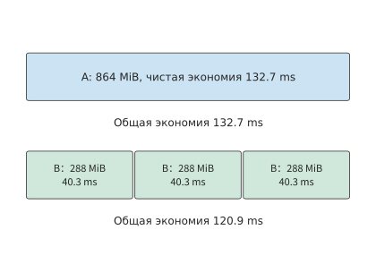
Рисунок 8-22. В обоих случаях ёмкость кэша составляет 864 MiB. A занимает 864 MiB и обеспечивает ожидаемую чистую экономию 132,7 ms; каждый из трёх префиксов типа B занимает 288 MiB и экономит 40,3 ms, вместе — 120,9 ms. Ширина на рисунке обозначает ёмкость; время рассчитано по времени повторного вычисления на RTX PRO 6000 и времени получения через PCIe Gen5, а вероятность попадания в обоих случаях равна 50%.
У приведённого выбора есть предпосылка: префикс должен сохраняться до следующего использования. При недостаточной ёмкости кэша состояние может быть вытеснено, и тогда его придётся вычислять заново, даже если следующий раунд входных данных сохраняет тот же префикс. Одно воспроизведение 12 раундов входных данных агента содержало 19 556 входных токенов. При одинаковых мешающих запросах в пуле кэша размером 6 GiB в кэш попало 16 304 токена, поэтому заново потребовалось обработать лишь 3252 токена. В пуле размером 1 GiB попаданий не было, и пришлось заново обработать все входные данные. После увеличения времени ожидания между соседними раундами на 0,2 секунды число попаданий не изменилось. В этом сравнении увеличение ёмкости сохранило пригодный для повторного использования префикс, тогда как простая задержка следующего запроса не дала такого эффекта.13
Допуск в кэш определяет, сохранять ли префикс после завершения запроса; политика вытеснения определяет, какой префикс удалить первым при нехватке пространства; политика выгрузки — на какой уровень хранения переместить состояние; политика повторного вычисления — сколько входных токенов обработать заново. Для 16 длинных запросов из примера в начале главы сохранение одной копии общего префикса требует лишь 864 MiB, но одновременно сокращает дублирование при хранении и вычисления prefill для последующих запросов.
Упражнение 8-4. Ключевое. Анализ: какие префиксы следует сохранять в ограниченном кэше, чтобы максимально сэкономить время? Доступная ёмкость кэша составляет 864 MiB. Префикс A содержит 6144 токена и занимает 864 MiB; три независимых префикса типа B содержат по 2048 токенов и занимают по 288 MiB. Для RTX PRO 6000 рассчитайте время повторного вычисления по числу матричных операций, приняв производительность равной 62% пиковой производительности BF16 в 503,8 TFLOP/s. Время получения рассчитайте для PCIe Gen5 x16 с пропускной способностью 64 GB/s в каждом направлении; время обслуживания примите равным времени одной выгрузки, совпадающему со временем получения. Вероятность попадания во всех случаях равна 50%. Сравните ожидаемую чистую экономию времени при сохранении одного префикса A и трёх префиксов типа B. Сохраняя вероятность попадания для префиксов типа B неизменной, определите, ниже какого значения вероятности попадания для A следует перейти к сохранению трёх B. Затем замените линию на PCIe Gen4 x16 с пропускной способностью 32 GB/s в каждом направлении и повторите сравнение. В части анализа данных прочитайте прилагаемые данные 12 раундов входных данных и воспроизведения кэша, отдельно вычислите долю общего префикса и фактическую долю попаданий и объясните, почему использование пространства кэша другими запросами влияет на фактическую долю попаданий.
8.4 Сжатие и выгрузка¶
8.4.1 Потребление памяти после квантования весов¶
Совместное использование префикса экономит пространство за счёт устранения дублирующихся KV. Даже если запросы не имеют одинаковых префиксов, объём хранения весов и KV можно уменьшить с помощью квантования. Обычно при квантовании числовые значения кодируются группами: для каждой группы сохраняются значения с меньшей разрядностью и метаданные, такие как scale; во время вычислений по этой информации восстанавливаются приближённые значения.
Q2_K — один из форматов группового квантования, реализованных в семействе библиотек тензорных вычислений GGML. Основное кодирование использует 2 бита, а для scale внутри группы сохраняется дополнительная информация. Например, в этом формате каждая группа содержит 256 значений: 2-битное кодирование занимает \(256\times2/8=64\) байта, а метаданные, включая scale и минимальное значение, — ещё 20 байт. Следовательно, одна группа занимает 84 байта, в среднем \(84\times8/256=2.625\) бита на значение. При уменьшении разрядности доля метаданных в общем объёме соответственно возрастает и в этом формате составляет около 24%.27
Расширенный пример: контекст какой длины ещё поместится в памяти после загрузки квантованных весов? В одном из вариантов файла Q2_K для Qwen3-235B-A22B применяется преимущественно 2-битное групповое квантование со смешением нескольких разрядностей. Квантованные данные вместе с неквантованными данными с плавающей точкой занимают около 64.43 GiB, метаданные квантования — около 15.37 GiB, а вместе с заголовком файла и заполнением получается около 79.81 GiB. Другой вариант, UD-Q2_K_XL, занимает около 81.97 GiB. У Apple M2 Max, использованного в эксперименте 8-7, заявлено 96 GB объединённой памяти в десятичном исчислении. Если зарезервировать 8 GiB для системы и рабочей области, останется около 81.41 GiB.14
После загрузки первого файла в память останется 1.60 GiB, тогда как второй файл уже превышает доступный объём примерно на 0.56 GiB. BF16 KV для одного контекста 8K этой модели занимает около 1.47 GiB, поэтому в первом случае можно обработать ещё один запрос, оставив около 0.13 GiB. Если увеличить длину контекста до 32K, для KV потребуется около 5.88 GiB, поэтому придётся увеличить объём памяти или изменить способ размещения весов. Разница в размере двух файлов составляет всего 2.16 GiB, но её уже достаточно, чтобы определить, поместится ли запрос.
В системах с объединённой памятью CPU и GPU используют общую физическую память. После отображения файла весов в адресное пространство его страницы должны находиться в физической памяти только при обращении к соответствующим данным. Если общий объём данных, к которым требуется обращаться во время выполнения, превышает объём памяти, страницы будут постоянно подгружаться. Поэтому проблему нехватки памяти можно решить либо сокращением числа байтов самих данных, либо сохранением только данных, необходимых в текущий момент, с переносом остальных перед использованием. Сначала рассчитаем выигрыш от сжатия KV, а затем проанализируем время, необходимое для переноса весов.
8.4.2 Сжатие KV и стоимость чтения¶
Если применить к KV тот же метод группирования, можно рассчитать, сколько дополнительных запросов поместится благодаря сэкономленному пространству. Веса совместно используются множеством запросов, тогда как KV непрерывно растёт вместе с входными и выходными данными. Для модели из этой главы BF16 KV одного контекста 8K занимает 1152 MiB. Квантование изменяет разрядность каждого значения, а представление контекста определяет, сколько значений нужно сохранять для каждого токена: в разделе 9.2.2 состояние GQA и компактное состояние MLA для одного и того же контекста 8K приведены рядом, причём последнее занимает всего 549 MiB. Каждые 32 значения BF16 занимают 64 байта. q8_0 — это 8-битный формат квантования, в котором 32 значения используют один общий scale. При переходе на q8_0 сохраняются 32 байта кодированных значений и 2 байта scale, то есть объём уменьшается до \(34/64\) исходного; q4_0 использует тот же способ группирования, но снижает разрядность кодированных значений до 4 бит, сохраняя 16 байт кодированных значений и 2 байта scale, то есть объём уменьшается до \(18/64\).
Следовательно, для того же контекста потребуется
По сравнению с BF16 формат q8_0 экономит 540 MiB, а q4_0 — 828 MiB. С учётом scale эти форматы занимают в среднем соответственно 8.5 бита и 4.5 бита на значение. Поскольку для каждой группы необходимо сохранять scale, объём метаданных также растёт вместе с длиной KV.15
На рисунке 8-23 этот расчёт представлен в виде байтовой компоновки. В каждой строке сохраняются одни и те же 32 значения: кодированная часть сокращается, но scale остаётся. Поэтому общая длина q8_0 и q4_0 составляет соответственно 34 и 18 байт, а не 32 и 16 байт, получаемых при учёте только разрядности кодирования.
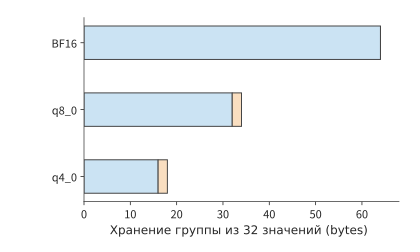
Рисунок 8-23. Пространство, необходимое форматам BF16, q8_0 и q4_0 для хранения одной и той же группы из 32 числовых значений. Длина полос пропорциональна числу байтов; оранжевым показаны 2 байта scale для каждой группы. Если умножить общую длину группы на число групп, получится объём KV для всего контекста.
После завершения генерации длинного запроса из примера в начале главы BF16 KV при блочном распределении занимает в общей сложности 1188 MiB. При использовании q8_0 с той же компоновкой потребуется \(1188\times34/64=631.125\) MiB, поэтому 16 независимых длинных запросов в сумме займут около 9.86 GiB и поместятся в зарезервированные 12 GiB памяти. Таким образом, совместное использование и сжатие экономят пространство по-разному: совместное использование устраняет повторяющиеся префиксы, а сжатие уменьшает число байтов на каждое значение.
При вычислении внимания со сжатым KV объём чтения уменьшается, но преобразование формата требует дополнительного времени. Пусть за одно вычисление считывается на \(\Delta D\) байт меньше, эффективная пропускная способность равна \(\beta\), а преобразование добавляет \(T_c\) последовательного времени выполнения. Тогда чистая экономия времени составит
Например, при переводе одного контекста 8K на RTX PRO 6000 из BF16 в q8_0 считывается на 540 MiB меньше. При эффективной пропускной способности около 1.16 TB/s для операции, ограниченной чтением (раздел 8.6.3, 65% от пиковых 1792 GB/s), экономится около 0.487 ms. Если преобразование добавляет 0.2 ms, итоговая экономия составит около 0.287 ms; если оно добавляет 0.8 ms, время, наоборот, увеличится примерно на 0.313 ms. Ускорит ли один и тот же формат сжатия выполнение, зависит от того, меньше ли время преобразования сэкономленного времени чтения.
Чем длиннее контекст, тем больше времени экономится за счёт сокращения чтения. В одном из ранних исследований на H100 с Llama-3.1-8B интервалы выдачи токенов для BF16 и FP8 аппроксимировались соответственно выражениями \(6.44+4.37\times10^{-5}L\) и \(6.58+2.37\times10^{-5}L\) ms. Постоянная составляющая FP8 больше на 0.14 ms, а прирост на каждый токен контекста меньше на \(2\times10^{-5}\) ms. Если разделить разницу постоянных накладных расходов на разницу времени, добавляемого каждым токеном контекста, точка пересечения составит около 7000 токенов. При 2K получается около 6.53 ms для BF16 и 6.63 ms для FP8, а при 16K — около 7.16 и 6.97 ms соответственно. При достаточно длинном контексте экономия времени чтения превышает дополнительные постоянные накладные расходы.15
Как отмечалось в начале раздела, представление контекста определяет, сколько значений необходимо сохранять для каждого токена; таким же способом можно сравнивать объём локального и глобального состояний моделей со смешанным вниманием. Для базового контекста 8K сложим объёмы глобальной истории и действующего SWA. У DeepSeek V4.1 они составляют соответственно 6.953 MiB и 2.578 MiB, всего 9.531 MiB; соответствующие два компонента V4 в сумме занимают 30.521 MiB, примерно в 3.20 раза больше, чем у V4.1. Локальное окно занимает фиксированное пространство, поэтому при коротком контексте разница общего объёма меньше 3.95-кратной разницы глобальной истории.
8.4.3 Выгрузка весов, предвыборка и перенос на каждом шаге¶
Сжатие уменьшает размер самих данных. Другой способ увеличить доступный объём — поочерёдно размещать данные на GPU: переносить их только тогда, когда они нужны для вычислений, а после использования повторно задействовать это пространство. При выгрузке весов часть весов, обычно постоянно находящихся на GPU, перемещается в основную память и возвращается на GPU перед вычислением соответствующего слоя. Освободившуюся память ускорителя можно использовать для KV, но при каждом прямом проходе эти веса придётся переносить заново. При пошаговой генерации ответа перенос повторяется на каждом цикле decode.
Три BF16-матрицы FFN одного слоя Qwen3-8B вместе занимают 288 MiB. Если из 36 слоёв выгружать один слой из каждых четырёх, будут выгружены девять наборов весов FFN, что освободит 2592 MiB. На GPU также необходимо зарезервировать буфер для предвыборки — заблаговременного копирования весов слоя на GPU перед его вычислением. Один набор буферов занимает 288 MiB, поэтому чистая экономия составляет 2304 MiB; два набора занимают 576 MiB, оставляя чистую экономию 2016 MiB. Если считать единицей KV размером 1152 MiB для одного входа 8K, в первом случае поместятся ещё два запроса, а во втором — только один. Если резервировать по 1188 MiB, необходимых после завершения генерации, обе схемы позволят добавить только один полный запрос.16
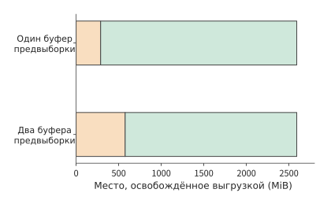
Рисунок 8-24. Выгрузка девяти наборов FFN освобождает в общей сложности 2592 MiB. Оранжевым показан буфер предвыборки, остающийся на ускорителе, зелёным — чистый объём, доступный для перераспределения; с одним набором буферов чистая экономия составляет 2304 MiB, с двумя — 2016 MiB.
Предвыборка должна соблюдать две зависимости по порядку выполнения: вычисление может читать веса только после завершения их копирования, а буфер можно перезаписать следующим набором весов только после того, как вычисление перестанет использовать текущий набор. При одном наборе буферов один и тот же буфер последовательно используется для копирования, вычисления и следующего копирования. При двух наборах можно вычислять текущий слой, одновременно копируя веса последующего слоя в другой набор буферов. Это позволяет перекрыть копирование вычислениями, но сами буферы занимают больше памяти.
Сначала рассчитаем стоимость переноса по каналу связи. Эта карта подключена к хосту через PCIe Gen5 x16 с заявленной пропускной способностью 64 GB/s в каждом направлении. На каждом цикле необходимо переносить 2592 MiB, то есть 2.72 GB, для чего требуется
Это уже превышает 26.26 ms, необходимые для одного цикла decode при batch 1. Даже если все остальные вычисления удастся полностью перекрыть копированием, каждый цикл всё равно займёт не менее 42.5 ms. Если за цикл генерируется по одному токену для каждого из четырёх запросов, максимальная общая пропускная способность вывода составит около \(4/0.0425\approx94\) token/s, а интервал выдачи токенов для каждого запроса — не менее 42.5 ms. Для генерации 256 выходных токенов требуется 255 последующих прямых проходов, поэтому один только перенос весов займёт около 10.8 секунды. Следовательно, выгрузка этой части весов через PCIe не позволяет уложиться в предельное время выполнения 7 секунд.
Между CPU и GPU бывают и значительно более быстрые соединения. В GH200 CPU Grace соединён с GPU Hopper посредством NVLink-C2C с пропускной способностью 450 GB/s в каждом направлении. Перенос тех же 2.72 GB занимает не менее 6.0 ms за цикл и около 1.54 секунды за 255 циклов. Если копирование на каждом цикле выполняется быстрее вычислений одного цикла decode, предвыборка может скрыть его за вычислениями.
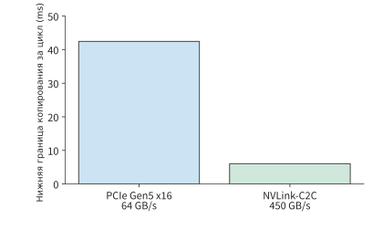
Рисунок 8-25. На каждом цикле копируется 2592 MiB (2.72 GB). Через PCIe Gen5 x16 с пропускной способностью 64 GB/s в каждом направлении требуется не менее 42.5 ms, а через NVLink-C2C в GH200 с пропускной способностью 450 GB/s в каждом направлении — не менее 6.0 ms.
Решающим здесь является отношение объёма переносимых на каждом цикле данных к эффективной пропускной способности. Предвыборка позволяет выполнять перенос одновременно с вычислениями, но число передаваемых за цикл байтов остаётся прежним.
Если сначала сжать веса, а затем переносить их, необходимо также учесть время распаковки. Пусть исходные данные занимают \(S\) байт, после сжатия — \(rS\) байт, пропускная способность канала равна \(B_{\mathrm{link}}\), а пропускная способность распаковки — \(R_{\mathrm{dec}}\) в пересчёте на выходные исходные байты. Последовательные передача и распаковка займут \(rS/B_{\mathrm{link}}+S/R_{\mathrm{dec}}\), тогда как прямая передача потребует \(S/B_{\mathrm{link}}\). Следовательно, перенос после сжатия будет быстрее, только если
Прямая передача 96 MiB весов через PCIe Gen5 x16 занимает около 1.57 ms; после сжатия весов до четверти исходного объёма передача сжатых данных занимает всего 0.39 ms. Чтобы сохранить эту экономию в 1.18 ms, распаковщик должен выдавать более 85.3 GB исходных данных в секунду. Чем быстрее канал, тем выше требования к пропускной способности распаковки.17
При описанной в этом разделе выгрузке вычисления модели по-прежнему полностью выполняются на GPU, а основная память хранит временно неиспользуемые веса. В разделе 9.3 будет изменено и место выполнения вычислений: если веса экспертов уже находятся в основной памяти, вычисления можно выполнить непосредственно на CPU и вернуть на GPU только меньшие по объёму активации. Тогда потребуется сравнить число входных строк для каждого эксперта, время вычислений на CPU и время передачи весов.
Упражнение 8-5. Вычисление: объём памяти, сэкономленный выгрузкой весов, и дополнительный перенос. Пусть выгружаются девять наборов весов FFN по 288 MiB каждый. Предположим, что каждый набор буферов предвыборки вмещает один набор весов FFN. Рассчитайте чистую экономию памяти ускорителя при использовании одного и двух наборов буферов, а также определите, сколько дополнительных входных состояний по 1152 MiB или полных состояний запросов по 1188 MiB поместится в освобождённом пространстве. Затем, используя пропускную способность 64 GB/s в каждом направлении для PCIe Gen5 x16 и 450 GB/s в каждом направлении для GH200 NVLink-C2C, рассчитайте нижнюю границу времени копирования на одном шаге и за 255 шагов. Если на все операции копирования отводится одна секунда, определите минимальную необходимую однонаправленную пропускную способность.
8.4.4 Выбор объёма и скорости с учётом ограничений качества¶
В разделе 8.4.2 были рассчитаны экономия пространства при сжатии и дополнительные затраты времени на преобразование, но ещё не был дан ответ на вопрос, останется ли ответ тем же после изменения числового формата. Под исполнительным бэкендом здесь понимается реализация kernel, непосредственно выполняющая вычисление внимания. Сжатие KV изменяет сохраняемые числовые значения, а замена исполнительного бэкенда может одновременно изменить формат вычисления Q, процесс преобразования и числовую точность операций редукции. Раздельное сравнение форматов хранения тензоров и точности вычислений позволяет определить источник различий в результатах.
Ниже такое раздельное сравнение проводится на восьми фиксированных задачах, расположенных в одинаковом порядке на трёх рисунках. Задачи основаны на документах двух длин: каждый документ содержит 128 или 512 записей из шестизначных чисел, по четыре независимых документа каждой длины. В журнале эксперимента они обозначены как n128-r0 — n128-r3 и n512-r0 — n512-r3, а на рисунках последовательно представлены как задачи 1–8. Каждая задача запускалась по два раза при каждом из двух уровней параллелизма, что позволяет последовательно сравнить влияние различных числовых форматов на одни и те же задачи.
В серии экспериментов с Qwen3-8B веса BF16 оставались неизменными, а сравнивались три способа вычисления внимания. Из 32 свободных генераций с BF16 KV правильными были 28; после перехода на исходную реализацию FP8 правильными оказались 26; когда FP8 KV был сохранён, а Q возвращён к BF16, число правильных ответов снова составило 28. В последней конфигурации изменилась только точность Q, но результаты стали другими. Это показывает, что формат хранения KV и точность вычисления Q необходимо исследовать раздельно.19
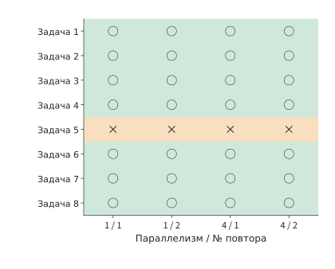
Рисунок 8-26. Базовая конфигурация с BF16 KV. Каждая строка соответствует одной фиксированной задаче, а четыре столбца соответствуют двум свободным генерациям при каждом из уровней параллелизма 1 и 4. Зелёный круг означает правильный ответ, оранжевый крест — ошибку; всего правильно выполнено 28 из 32 запусков.
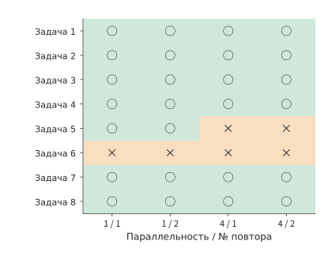
Рисунок 8-27. Для тех же задач и порядка запусков исходная реализация FP8 дала 26 правильных ответов из 32. Это сравнение включает влияние выбора реализации на точность Q. Круг означает правильный ответ, крест — ошибку; каждая строка соответствует одной задаче, а столбцы обозначают уровень параллелизма и номер повторного запуска.
На рисунке 8-28 дополнительно восстановлена точность BF16 только для Q, тогда как KV по-прежнему хранится в FP8. Сравнение одинаковых столбцов на трёх рисунках показывает, результаты каких именно задач изменились, а не только общее число правильных ответов.
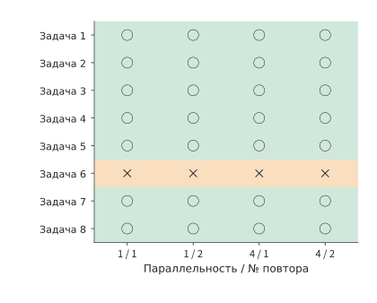
Рисунок 8-28. Q сохраняет точность BF16, а KV по-прежнему использует FP8; правильно выполнено 28 из 32 запусков, однако ошибки возникли в других задачах, чем в базовой конфигурации BF16. На трёх рисунках используются одинаковые задачи и порядок столбцов, а веса модели во всех случаях представлены в BF16. Круг означает правильный ответ, крест — ошибку; каждая строка соответствует одной задаче, а столбцы обозначают уровень параллелизма и номер повторного запуска.
Задача 5 на рисунках — n512-r0 в журнале эксперимента, то есть первый длинный документ из 512 записей, — во всех четырёх запусках с BF16 KV была выполнена неверно, а в конфигурации «FP8 KV + BF16 Q» — правильно. Для задачи 6, n512-r1, наблюдается строго обратная картина. Обе конфигурации дали по 28 правильных ответов, но ошиблись в разных задачах. Расположение результатов одной задачи рядом позволяет увидеть, где именно возникли различия и сохранялись ли они при повторных запусках.
Ошибки также увеличивают время выполнения задачи. Если после первого неправильного ответа производится повторная попытка, общее время до получения правильного ответа должно включать первую генерацию, проверку ответа и повторную генерацию. В проведённых экспериментах две повторные попытки исправили ошибки, но дополнительно потребовали около 2.0 секунды генерации и 92 токенов. Если первый ответ генерируется быстрее, но чаще оказывается неправильным, полное выполнение задачи в итоге может занять больше времени.20
Сравним две описанные выше схемы размещения KV: после перехода на q8_0 шестнадцать независимых длинных запросов занимают около 9.86 GiB, а при совместном использовании префикса BF16 — около 5.91 GiB. Чтобы определить, какая схема предпочтительнее, необходимо включить время преобразования, генерации и повторных попыток в общее время обработки запроса. Это будет сделано в комплексном примере раздела 8.6.
Упражнение 8-6. Анализ данных: влияние сжатия KV на объём, правильность ответов и стоимость повторных попыток. Предположим, что каждая группа содержит 32 значения, а для хранения scale дополнительно используются 2 байта. Повторно рассчитайте объём KV для входа 8K и полного длинного запроса в форматах q8_0 и q4_0. Затем изучите результаты по отдельным задачам для трёх конфигураций точности KV и Q и перечислите задачи, правильность которых различается между BF16 KV и «FP8 KV + BF16 Q». Наконец, изучите журнал повторных попыток, для каждой успешно выполненной задачи сложите время первого ответа и повторной попытки и сравните результат со временем только последней успешной генерации.
8.5 Спекулятивное декодирование¶
8.5.1 Черновик, проверка, откат и корректность¶
В двух предыдущих разделах главным образом изменялись способы хранения и чтения данных, но каждый запрос по-прежнему требовал пошаговой генерации. Если за одно вычисление целевой модели можно определить несколько выходных значений, то для генерации 256 токенов уже не потребуется выполнять столько же шагов. При обычном декодировании целевая модель за каждое прямое вычисление генерирует один токен. В разделе 8.2 вычисления для разных запросов объединялись, чтобы одно чтение весов использовалось для большего числа строк. Спекулятивное декодирование использует другой подход: сначала для одного запроса генерируется черновая последовательность, после чего целевая модель одновременно проверяет несколько входящих в неё токенов. Если целевая модель принимает несколько черновых токенов, одно вычисление определяет сразу несколько выходных токенов.
Сначала рассмотрим жадную генерацию: на каждом шаге выбирается токен с наибольшей вероятностью по версии целевой модели. Предположим, черновая последовательность содержит четыре токена, а целевая модель вычисляет для каждой позиции, какой токен должен быть выведен. Первые два совпадают с черновиком, а третий отличается. Тогда первые два черновых токена сохраняются, а в третьей позиции выводится токен, выбранный целевой моделью. Четвёртый черновой токен был сгенерирован после ошибочного третьего токена, поэтому он также отбрасывается. Следующий раунд генерации продолжается с исправленной последовательности. Если совпали все четыре черновых токена, целевая модель обычно может дополнительно сгенерировать после них ещё один токен.
На рис. 8-29 показан порядок действий при расхождении в третьем токене. Хотя целевая модель уже вычислила результаты проверки последующих токенов, четвёртый токен зависит от ошибочного третьего чернового токена, поэтому использовать его нельзя. После одной проверки остаются два совпавших черновых токена и один исправленный токен — всего три выходных токена.
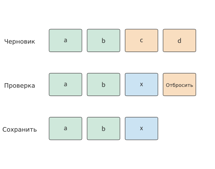
Рис. 8-29. Процесс жадной проверки. a, b, c, d и x обозначают токены; в третьей позиции целевая модель выбирает x, который отличается от чернового c. Четвёртый токен и последующие результаты проверки аннулируются, а следующий раунд генерации продолжается с a, b, x. Прямоугольники обозначают позиции токенов в последовательности, а не время выполнения.
При случайном сэмплировании необходимо обеспечить, чтобы итоговый результат по-прежнему соответствовал распределению вероятностей целевой модели. Обозначим целевое распределение как \(p(x)\), а черновое — как \(q(x)\). Сначала из \(q\) сэмплируется черновой токен \(x\), который затем принимается со следующей вероятностью:
Вероятность сэмплировать \(x\) и сразу принять его равна \(q(x)\alpha(x)=\min(p(x),q(x))\). Для достижения целевой вероятности \(p(x)\) недостаёт \([p(x)-q(x)]_+\). Здесь \([z]_+=\max(z,0)\) означает, что сохраняется только положительная разность. Поэтому после отклонения чернового токена эта положительная разность нормализуется, а из полученного распределения выполняется повторное сэмплирование. Если объединить случаи непосредственного принятия и повторного сэмплирования после отклонения, итоговая вероятность вывода \(x\) будет равна \(p(x)\).21
Поясним этот процесс на примере всего с двумя символами — A и B. Целевое распределение задаётся как \(p(A)=1/4\) и \(p(B)=3/4\). Если черновик всегда генерирует A, то A принимается с вероятностью \(1/4\), а в остальных \(3/4\) случаев A отклоняется и вместо него выводится B. Если черновик всегда генерирует B, то B принимается с вероятностью \(3/4\), а в остальных случаях вместо него выводится A. Оба способа дают одно и то же целевое распределение, однако вероятность принятия черновика различается, поэтому различается и эффективность выполнения.
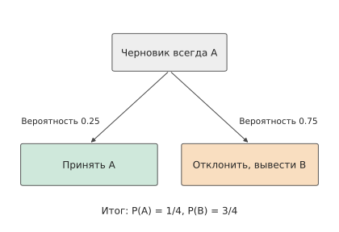
Рис. 8-30. Вероятность принять A равна 1/4, а вероятность вывести B после отклонения — 3/4. Вместе эти два пути дают целевое распределение.
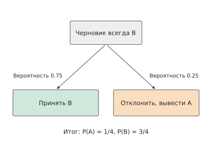
Рис. 8-31. Вероятность принять B равна 3/4, а вероятность вывести A после отклонения — 1/4. Целевое распределение не изменилось, но вероятность принятия черновика стала выше.
После проверки действительная длина KV корректируется до позиции уже определённого результата, а KV, соответствующие отброшенным черновым токенам, больше не участвуют в последующих вычислениях. Менеджер страниц обновляет ссылки на блоки в соответствии с длиной уже определённого результата, а сэмплер и средство проверки грамматики — компонент, ограничивающий набор доступных токенов согласно заданному формату вывода, — также возвращаются в соответствующее состояние. После этого следующий раунд вычислений продолжается с исправленной последовательности.
8.5.2 Время раунда и число выходных токенов¶
Спекулятивное декодирование изменяет как продолжительность каждого раунда, так и итоговое число выведенных за раунд токенов. Пусть раунд \(r\) занимает время \(T_r\) и выводит \(N_r\) токенов. Тогда после нескольких последовательных раундов среднее время на один выходной токен равно
Например, два раунда длительностью по 1,5 мс выводят соответственно 1 и 5 токенов. Суммарно получаются 3 мс и 6 токенов, то есть в среднем 0,5 мс на токен. Если сначала вычислить среднее значение для каждого раунда, а затем с одинаковыми весами усреднить 1,5 и 0,3 мс/токен, получится 0,9 мс. Это равносильно присвоению одинакового веса раунду, выводящему один токен, и раунду, выводящему пять токенов. Среднее время на токен можно получить только прямым делением общего времени на общее число токенов.
Пример расчёта: как доля принятых черновых токенов определяет среднее число выходных токенов за раунд? Продолжим использовать целевое распределение с двумя символами и предположим, что позиции токенов независимы. В каждом раунде черновик генерирует четыре одинаковых символа, а итоговый результат дополнительно включает исправленный токен при отклонении либо дополнительный токен после принятия всего черновика. Пусть при условии, что все предшествующие черновые токены уже приняты, вероятность принятия токена в текущей позиции равна \(a\). Каждый раунд выводит не менее одного токена. Чтобы вывести второй токен, необходимо принять первый черновой токен, что происходит с вероятностью \(a\). Чтобы вывести третий, необходимо принять первые два, что происходит с вероятностью \(a^2\). Последовательно складывая эти значения, получаем среднее число выходных токенов за раунд:
Каждый член этого выражения обозначает вероятность того, что в итоге будет выведено не менее соответствующего числа токенов. Для черновика AAAA значение \(a=1/4\), а среднее число выходных токенов за раунд составляет около 1,33. Для BBBB значение \(a=3/4\), а среднее число выходных токенов — около 3,05. На RTX PRO 6000 один раунд обычного декодирования при batch 1 и контексте 2K занимает 26,26 мс (эксперимент 8-1). При проверке пяти позиций считываются те же веса и KV, что и при обычном декодировании. Дополнительные матричные операции для четырёх строк требуют около 65 GFLOP, что при 62% от пиковой производительности BF16 занимает лишь около 0,2 мс, поэтому продолжительность раунда проверки по-прежнему принимается равной 26,26 мс. В эксперименте 8-5 наблюдалось то же явление: DFlash — черновая сеть, параллельно генерирующая весь черновой фрагмент за одно прямое вычисление, — в каждом раунде генерировала 7 черновых токенов и проверяла 8 позиций; медианное время составляло 15,2 мс, что сопоставимо с 16,9 мс на один шаг обычного декодирования при той же конфигурации. С учётом 0,1 мс на запрос черновика один раунд занимает в общей сложности 26,36 мс, а среднее время на токен для двух вариантов черновика составляет соответственно около 19,8 и 8,64 мс. Оба результата лучше 26,26 мс/токен при обычном декодировании. Проверка почти не увеличивает время раунда, а даже при отклонении большей части черновика каждый раунд всё равно даёт как минимум один токен, поэтому черновик AAAA с низкой вероятностью принятия также обеспечивает ускорение.22
Экономия времени за счёт принятия большего числа черновых токенов может быть сведена на нет затратами на запрос черновика. Чтобы превзойти обычное декодирование, полное время раунда должно быть меньше произведения среднего числа выходных токенов на 26,26 мс. После вычета 26,26 мс, необходимых для проверки, на запрос черновика остаётся около 8,7 мс для AAAA и около 53,9 мс для BBBB. На рис. 8-32 эти две точки пересечения показаны на оси стоимости запроса.
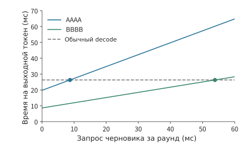
Рис. 8-32. Целевое распределение с двумя символами, в каждом раунде генерируются четыре черновых токена. Проверка каждого раунда занимает 26,26 мс, а время запроса изменяется вдоль горизонтальной оси; время на один выходной токен вычисляется делением времени раунда на среднее число выходных токенов. Обычное декодирование занимает 26,26 мс/токен (RTX PRO 6000, batch 1, контекст 2K). Досрочная остановка отсутствует, дополнительный токен учитывается в числе выходных токенов. Точки на графике отмечают пример расчёта со временем запроса 0,1 мс; AAAA и BBBB пересекаются с обычным выполнением при времени запроса около 8,7 и 53,9 мс соответственно.
Подготовительные операции перед использованием черновика также необходимо учитывать в общем времени. Если построение индекса контекста занимает 2 секунды, а черновик BBBB экономит около \(26.26-8.64\approx17.6\) мс на каждый выходной токен, то для компенсации этих двух секунд потребуется сгенерировать около 114 токенов. Генерация 256 выходных токенов с помощью обычного декодирования занимает около 6,72 секунды. Если сначала за 2 секунды построить индекс, а затем использовать черновик BBBB, ожидаемое полное время составит около 4,22 секунды. Если индекс можно построить заранее и совместно использовать для нескольких запросов, эти затраты распределятся между ещё большим числом выходных токенов.
8.5.3 Источники черновика и последовательная либо параллельная генерация¶
Сколько времени можно сэкономить с помощью четырёх черновых токенов, зависит как от числа токенов, прошедших проверку, так и от времени, необходимого для генерации этого чернового фрагмента. В реальной системе черновик можно искать в контексте либо генерировать с помощью дополнительной сети. Эти варианты требуют разного времени подготовки и объёма памяти.
При поиске в контексте повторяющиеся фрагменты находятся во входных данных или уже сформированном ответе; основные затраты приходятся на сопоставление и построение индекса. Небольшая независимая модель генерирует черновик последовательно и требует дополнительно хранить собственные веса и KV. Методы семейства EAGLE передают промежуточные представления целевой модели в меньшую предсказывающую сеть, а методы семейства DFlash параллельно генерируют несколько черновых токенов. Встроенные в модель головы MTP генерируют черновик с помощью предсказывающей способности, полученной при совместном обучении.21
Если разделить каждый раунд на четыре этапа — генерацию черновика, подготовку проверки, проверку целевой моделью и определение результата, — эти методы можно сравнивать поэтапно. Например, черновая сеть DFlash из эксперимента 8-5 имеет веса объёмом около 1,95 GiB (2,10 GB). При эффективной пропускной способности для batch 1 — 15,44 GB за 26,26 мс, то есть около 588 GB/s, — одно прямое вычисление этой сети занимает около 3,57 мс. Если с её помощью последовательно сгенерировать четыре черновых токена, потребуется четыре прямых вычисления общей длительностью 14,28 мс. При параллельной генерации всего чернового фрагмента, как в DFlash, достаточно одного прямого вычисления длительностью около 3,57 мс. Проверка целевой моделью в обоих случаях занимает 26,26 мс. Если каждый раунд в среднем выводит 3 токена, то при последовательном подходе время на токен составит около \((14.28+26.26)/3\approx13.5\) мс, а при параллельном — около \((3.57+26.26)/3\approx9.9\) мс. В этом случае ускорение достигается за счёт сокращения времени генерации черновика.
Теперь предположим, что параллельно сгенерированный черновик принимается реже и среднее число выходных токенов снижается до 2. Тогда среднее время на один выходной токен возрастает до \((3.57+26.26)/2\approx14.9\) мс, что уже хуже последовательного подхода. Более быстрая генерация черновика экономит 10,7 мс, но число выходных токенов за раунд уменьшается, поэтому время, распределяемое на каждый выходной токен, возрастает и весь запрос выполняется медленнее.
8.5.4 Динамический выбор длины черновика и конкуренция при параллельной обработке¶
После выбора источника черновика необходимо определить его длину для каждого раунда. Чем длиннее черновик, тем больше максимальное число токенов, которое можно вывести за один раунд. Однако последующие токены могут попасть в итоговый результат, только если приняты все предшествующие. Пусть при условии, что все предыдущие черновые токены уже приняты, условная вероятность принятия \(j\)-го токена равна \(a_j\). Тогда среднее число выходных токенов для черновика длиной \(m\) составляет
При увеличении длины черновика с \(m-1\) до \(m\) среднее число выходных токенов возрастает на \(\Delta N=\prod_{i=1}^{m}a_i\). Пусть для этого требуется дополнительное время \(\Delta T\), а исходный раунд занимает \(T\) и в среднем выводит \(N\) токенов. Тогда среднее время на один выходной токен равно \(T/N\). Чтобы после увеличения длины черновика это время сократилось, должно выполняться неравенство \((T+\Delta T)/(N+\Delta N)<T/N\), которое после преобразования принимает вид
Иными словами, среднее время, затрачиваемое на дополнительные выходные токены, должно быть меньше исходного среднего времени на токен. Поскольку вероятности принятия последовательно перемножаются, вероятность сохранения более поздних черновых токенов снижается, поэтому добавление таких токенов всё реже обеспечивает достаточную экономию времени.
Заранее заданная форма выполнения также влияет на дополнительное время \(\Delta T\). Например, если при проверке четырёх или пяти токенов в обоих случаях векторы признаков токенов дополняются до восьми строк матрицы и используется заранее подготовленный вычислительный граф для восьми строк, добавление одного токена требует мало дополнительных вычислений. Но если число проверяемых токенов увеличивается с восьми до девяти, матрицу приходится дополнять до шестнадцати строк и использовать соответствующий вычислительный граф, поэтому объём вычислений резко возрастает. Число параллельных запросов также влияет на выгоду от спекулятивного декодирования: при низкой нагрузке многострочная проверка может использовать простаивающие вычислительные ресурсы; при высокой нагрузке обычная пакетная обработка уже в полной мере обеспечивает совместное чтение весов, а генерация и проверка черновиков дополнительно конкурируют с другими запросами за ускоритель и память.
В одной серии измерений сравнивались черновики разной длины. K7 и K15 обозначают конфигурации, генерирующие соответственно 7 и 15 черновых токенов за раунд. Для короткой задачи извлечения Qwen3-8B/DFlash при одном одновременно выполняемом запросе медианное полное время обычного декодирования, K7 и K15 составляло около 90,0, 30,6 и 29,4 мс соответственно. Переход от обычного выполнения к K7 экономил около 59 мс, а переход от K7 к K15 — лишь ещё около 1,2 мс. В записях по раундам также встречались раунды, в которых при обеих длинах блока принимался только один черновой токен: K7 отбрасывал шесть черновых токенов, K15 — четырнадцать, а итоговая длина результата оставалась одинаковой. Более крупный блок проверки увеличивал объём вычислений, но не давал дополнительных выходных токенов в этом раунде.23
Таким образом, при динамической настройке длины черновика можно использовать приведённое выше условие: для запросов с высокой вероятностью принятия и небольшими затратами времени на добавление проверяемых позиций следует генерировать более длинный черновик; если черновик часто не проходит проверку уже в первых позициях либо требует перехода к более крупной форме выполнения, длину блока следует уменьшить. При выборе длины черновика также необходимо оставить место для KV целевой и черновой моделей, а затем определить число принимаемых запросов методом из раздела 8.3.
Упражнение 8-7 · Вывод: какая длина черновика минимизирует среднее время на один выходной токен? При фиксированной вероятности принятия чернового токена \(a=3/4\) вычислите среднее число выходных токенов за раунд для блоков длиной 1, 2, 4 и 8. Используя данные для RTX PRO 6000 из раздела 8.5.3 и округляя до одного знака после запятой, примите время проверки одного раунда равным 26,3 мс, а время последовательной генерации каждого чернового токена черновой сетью — 3,6 мс, то есть \(T_m=26.3+3.6m\) мс. Найдите среднее время на один выходной токен для каждой длины блока. Затем предположите, что черновик обрабатывается группами по 4 позиции, причём неполная группа требует столько же времени, сколько полная, то есть \(T_m=26.3+3.6\times4\lceil m/4\rceil\) мс. Сравните длины блока 4 и 5 и объясните выбор с помощью предельного условия.
8.6 Производительность и выбор конфигурации при потоке запросов¶
8.6.1 Интенсивность поступления, очереди, допуск и отмена¶
В разделах 8.2–8.5 рассматривалось, как изменять потребление памяти экземпляром и способ выполнения. Онлайн-сервис также должен обрабатывать непрерывное поступление запросов: один запрос ещё не завершён, а следующий уже попал в очередь; пока запрос ожидает ответа инструмента, вычисления модели приостановлены, но KV необходимо сохранять. Поэтому планировщик должен не только распределять текущие вычисления, но и сохранять состояние запросов, которые генерируют ответ или ожидают продолжения выполнения.
Объём памяти, необходимый для хранения состояния этих незавершённых запросов, зависит от среднего числа запросов в системе. В стабильном сервисе среднее число запросов в системе подчиняется закону Литтла:
где \(\lambda\) — средняя интенсивность поступления, а \(\bar T\) — среднее время пребывания запроса в системе. Если сложить время пребывания всех запросов за период наблюдения и разделить на продолжительность наблюдения, получится среднее число запросов в системе. Например, если каждую секунду поступают 4 запроса и каждый в среднем находится в системе 0,5 секунды, то среднее число запросов в системе равно 2; если среднее время пребывания увеличится до 2 секунд, их станет 8.
Одни из этих запросов находятся в очереди, другие вычисляются, а для третьих лишь сохраняется состояние. Увеличение batch может повысить пропускную способность вывода, однако чтение KV, вычисления и прочие накладные расходы постепенно ограничивают этот рост. Когда скорость обработки перестаёт расти вместе с интенсивностью поступления, новые запросы накапливаются в очереди, а время ожидания увеличивается.
Управление допуском определяет, начинать ли обработку нового запроса. Перед приёмом запроса проверяются доступное пространство KV и оставшееся до крайнего срока время. Для короткого запроса из раздела 8.1 первый вывод за 0,196 секунды и генерация за 6,76 секунды уже занимают 6,95 секунды; дополнительные 0,1 секунды в очереди приведут к превышению лимита времени. Заблаговременное выявление такого запроса позволяет отклонить его, передать другому экземпляру или применить более быструю конфигурацию выполнения. Отмена прекращает планирование последующих итераций, когда результат запроса теряет ценность, и освобождает пространство после завершения операций ускорителя.
Эти оптимизации влияют друг на друга. Сжатие KV позволяет экземпляру одновременно принимать больше запросов, а более крупный batch помогает обычному decode эффективнее совместно использовать веса, из-за чего меняется и относительная выгода спекулятивного декодирования. Далее эти изменения применяются к одному и тому же набору запросов, чтобы вычислить итоговые время выполнения и потребление памяти.
8.6.2 Эффективная пропускная способность с учётом качества и ограничений SLO¶
По одной лишь длине очереди и скорости завершения нельзя определить, получил ли пользователь пригодный ответ. В эксперименте по качеству из раздела 8.4.4 встречались ошибочные ответы, а из-за очереди правильный ответ может прийти слишком поздно. Эффективность сервиса можно оценить, лишь учитывая оба вида потерь. Пусть длительность окна наблюдения равна \(T_{\mathrm{obs}}\), для правильного ответа на запрос \(i\) значение \(Q_i=1\), а для завершённого вовремя — \(D_i=1\). Если измерять по числу завершённых запросов, эффективная пропускная способность равна
В числителе учитываются только правильные и завершённые вовремя запросы. Если вместо этого поместить в числитель количество всех завершённых запросов, получится пропускная способность завершения. Разница между ними показывает, сколько вычислительной мощности потрачено на ошибочные или запоздавшие ответы.
Серия измерений показывает величину обеих потерь. В эксперименте по поиску с Qwen3-8B использовались одни и те же восемь вопросов, причём запрос должен был завершиться с правильным ответом в течение 3 секунд после поступления. Сравнивались три режима: последовательный приём запросов, непрерывная пакетная обработка и одновременная отправка всех запросов. В каждом эксперименте отправлялось 16 запросов; всего во всех экспериментах было сгенерировано 336 ответов, из которых 294 оказались правильными, но лишь 155 одновременно уложились в срок. Остальные 139 правильных ответов вернулись слишком поздно и потому не удовлетворили требованиям сервиса.24
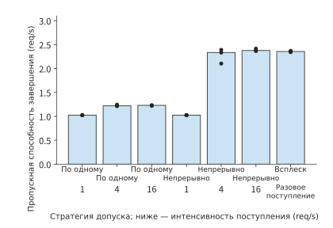
Рисунок 8-33. Для каждого сочетания режима допуска и условий поступления используются три окна по 16 запросов. Столбцы показывают медианную пропускную способность завершения всех запросов, точки — результаты отдельных окон. Время отсчитывается от запланированного момента поступления.
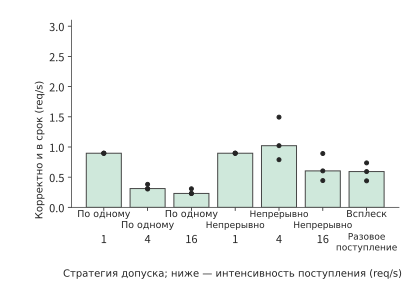
Рисунок 8-34. В числителе учитываются только правильные запросы, завершённые в течение 3 секунд. На обоих графиках используются одинаковые порядок категорий по горизонтальной оси и диапазон вертикальной оси; разница обусловлена ошибочными или запоздавшими ответами.
При интенсивности поступления 1/s эффективная пропускная способность обеих онлайн-стратегий составляет около 0,90 req/s. Объём работы в каждом batch невелик, поэтому даже при последовательном допуске большинство запросов с правильными ответами удаётся обработать вовремя. Когда интенсивность поступления возрастает до 4/s, пропускная способность завершения при последовательном допуске составляет около 1,22 req/s, однако эффективная пропускная способность падает до 0,31 req/s: очередь растёт, и многие правильные результаты приходят после крайнего срока. Непрерывная пакетная обработка повышает пропускную способность завершения примерно до 2,33 req/s, а эффективную пропускную способность — примерно до 1,02 req/s, поэтому больше запросов завершается в срок.
Если затем увеличить интенсивность поступления в непрерывном режиме до 16/s, пропускная способность завершения возрастёт лишь примерно до 2,38 req/s, а эффективная пропускная способность, напротив, упадёт примерно до 0,60 req/s, то есть приблизительно на 41%. Пропускная способность завершения практически перестаёт расти, и поступление дополнительных запросов главным образом увеличивает время ожидания в очереди. Для этой серии окон при 4/s вовремя возвращается больше правильных ответов, чем при 16/s. При выборе конфигурации сервиса следует сначала определить интенсивность поступления, при которой эффективная пропускная способность начинает снижаться, а затем ограничить количество вновь принимаемых запросов, чтобы избежать слишком долгого ожидания в очереди.
При последовательном приёме остальные запросы ещё не переданы движку, но продолжают ждать в очереди приложения. Поэтому время следует отсчитывать от запланированного момента поступления запроса, включая ожидание вне движка. С учётом измерений из этого раздела нужно отдельно вычислять количество токенов, выдаваемых ускорителем в секунду, время ожидания одного запроса и число правильных, своевременно завершённых запросов в секунду.
8.6.3 Конфигурация, ускоритель и полная стоимость задачи¶
Перед сравнением конфигураций преобразуем результаты измерений в скорость обработки. После выбора пакетной обработки, точности и настроек кэша фактическая скорость каждого этапа определяется делением объёма завершённой работы на время использования ускорителя: скорость prefill \(r_P\) измеряется числом новых входных токенов, обрабатываемых в секунду, а скорость decode \(r_D\) — числом вызовов decode, завершаемых в секунду. Если несколько запросов в batch совместно используют одно выполнение, считается, что каждый запрос завершил один вызов, а время использования учитывается только один раз. Для запроса с \(L\) новыми входными токенами и \(G\) выходными токенами время использования ускорителя в GPU-секундах равно
Если измерений в тех же условиях нет, время можно оценить, используя произведение характеристик оборудования и эффективности: время prefill определяется делением количества матричных операций на произведение пиковой вычислительной мощности и эффективности её использования, а время одного раунда decode — делением количества прочитанных байтов весов и KV на произведение пиковой пропускной способности памяти и эффективности её использования. В таблице ниже приведена эффективность, измеренная в эксперименте 8-1 на RTX PRO 6000. Время одного раунда decode берётся по журналу движка для раундов без prefill; интервал между результатами, наблюдаемый клиентом, дополнительно включает время доставки и потому немного больше, например 26,5 ms в разделе 8.1.1.
| Контекст 2K, без общего префикса | batch 1 | batch 4 | batch 16 | batch 64 |
|---|---|---|---|---|
| Веса и KV, читаемые за раунд | 15.44 GB | 16.34 GB | 19.97 GB | 34.46 GB |
| Время чтения при 1792 GB/s | 8.62 ms | 9.12 ms | 11.14 ms | 19.23 ms |
| Измеренное время одного раунда decode | 26.26 ms | 26.62 ms | 27.44 ms | 29.63 ms |
| Эффективность пропускной способности decode | 33% | 34% | 41% | 65% |
| Эффективность вычислений prefill | 62% | 61% | 61% | 58% |
Эффективность decode растёт вместе с batch не потому, что чтение становится быстрее. В этом эксперименте CUDA Graph был отключён, поэтому в каждом раунде каждый kernel отправлялся отдельно: объём чтения вырос с 15,44 GB до 34,46 GB, а время одного раунда — лишь с 26,26 ms до 29,63 ms. Чем больше batch, тем больше байтов приходится на этот почти постоянный промежуток времени. Эффективность prefill при этом стабильно составляет 58–62% от пиковой производительности BF16; для входа 8K с уже кэшированными первыми 6K она равна 52–58%.
Эффективность пропускной способности в таблице — это MBU из раздела 1.2.2, а эффективность вычислений — MFU. При batch 1 один раунд decode занимает примерно на 17,6 ms больше нижней границы чтения в 8,62 ms, причём это дополнительное время практически не зависит от объёма чтения. Согласно критерию из раздела 1.3.4, причина заключается не в пропущенной составляющей модели, а в накладных расходах на поочерёдную отправку kernel, планирование на стороне хоста и синхронизацию. Их можно устранить с помощью CUDA Graph и более качественного планирования; пример vLLM v0.6.0 из раздела 5.5.1 показывает, насколько можно сократить накладные расходы на стороне хоста.
Комплексный пример: выбор конфигурации с общим префиксом, сжатием и спекулятивным декодированием при ограничениях памяти и времени. Эффективная пропускная способность задаёт критерий оценки сервиса, а анализ ёмкости и времени позволяет ещё до запуска исключить неподходящие конфигурации. Используем экземпляр инференса, заданный в начале главы: экземпляру выделено 32 GiB на RTX PRO 6000, а после вычета весов и базовой рабочей области для KV и вспомогательных буферов остаётся 12 GiB. Одновременно поступают 16 длинных запросов, каждый с 8192 входными и 256 выходными токенами; первые 6144 входных токена у них совпадают, а предельное время завершения равно 7 секундам. Ниже сравниваются четыре варианта, причём предполагается, что каждый из них даёт правильные ответы. В вариантах с общим префиксом он уже кэширован до поступления запросов. В спекулятивном варианте используется черновая модель DFlash из эксперимента 8-5. После её включения пиковое потребление видеопамяти процессом возрастает примерно на 3,1 GiB — с 17 706 MiB до 20 894 MiB, причём веса черновой модели занимают около 1,95 GiB. Черновая модель также должна обработать вход: в эксперименте 8-5 при входе примерно из 2300 токенов время до первого токена выросло со 129,4 ms до 141,6 ms, то есть на 9,4%. Предположим, что в этой группе запросов каждый раунд в среднем выдаёт 3 токена.
Вариант с общим префиксом для этой группы запросов точно соответствует условиям эксперимента 8-1: вход 8K, первые 6K уже кэшированы, batch 16. На этапе prefill обработка 32 768 новых токенов заняла 2,04 s, \(r_P\approx16{,}059\) новых токенов/s, что соответствует 58% пиковой вычислительной мощности; после этого каждый раунд decode занимал 27,35 ms, а \(r_D=16/0.02735\approx585\) вызовов/s. Каждый запрос занимает \(t_{\mathrm{GPU}}=2048/16059+255/585\approx0.563\) GPU-секунды, а все 16 — около 9,01 GPU-секунды. Остальные варианты выводятся из этой таблицы и измерений в тех же условиях; ниже приведено время каждого этапа для всего batch из 16 запросов.25
| Вариант | Организация состояния | До возврата первого токена (prefill всего batch) | Выполнение после возврата первого токена |
|---|---|---|---|
| A | BF16, независимые контексты | 7.34 s | 255 раундов по 29.63 ms |
| B | BF16, общий префикс | 2.04 s | 255 раундов по 27.35 ms |
| C | q8_0, независимые контексты | 7.34 s | 255 раундов примерно по 28.26 ms |
| D | BF16, общий префикс и спекулятивное декодирование | 2.23 s | 85 раундов по 3 токена, каждый раунд по 27.35 ms |
В A и C префикс не используется совместно, поэтому для каждого запроса приходится полностью обрабатывать 8192 токена. Общее число матричных операций всего batch равно 2137,5 TFLOP, что при эффективности вычислений 58% в тех же условиях требует около 7,34 s. В каждом раунде A считывается 34,46 GB — столько же, сколько для 64 запросов по 2K, поэтому берётся указанное в таблице время 29,63 ms. В C размер KV уменьшается в \(34/64\) раза, поэтому в каждом раунде считывается 25,40 GB; интерполяция по объёму чтения между столбцами 19,97 GB и 34,46 GB даёт около 28,26 ms, без учёта времени преобразования формата. Prefill в D на 9,4% дольше, чем в B, и занимает около 2,23 s. В каждом раунде D для каждого из 16 запросов проверяется 8 позиций, что требует около 2,56 TFLOP матричных операций и при эффективности 58% занимает примерно 8,8 ms — меньше 27,35 ms на один раунд B. Согласно разделу 8.2.1 берётся большее из двух значений, поэтому раунд по-прежнему занимает 27,35 ms. Прямой проход черновой сети также выполняется в рамках того же раунда, а в эксперименте 8-5 медианное время раунда DFlash не превышало времени одного обычного шага decode (раздел 8.5.2), поэтому дополнительное время здесь не учитывается.
Сначала проверим, достаточно ли памяти. Для A требуется \(16\times1188=19008\) MiB, что превышает 12 GiB, поэтому одновременно принять всю группу запросов невозможно. Для B нужна лишь одна копия префикса и 16 частных состояний — всего 6048 MiB, или около 5,91 GiB. Состояние C сжато в \(34/64\) раза и занимает в общей сложности около 9,86 GiB. D добавляет к B 3188 MiB, поэтому занимает всего 9236 MiB, или около 9,02 GiB. B, C и D помещаются в память; теперь сравним время, необходимое каждому из них для завершения запросов.
Общее время B равно \(2.04+255\times0.02735=9.01\) секунды, что совпадает с измеренной в эксперименте 8-1 медианной длительностью запроса 9,02 секунды, но превышает лимит в 7 секунд. На этой карте только 255 раундов decode занимают 6,97 секунды, поэтому 16 совместно обрабатываемых запросов, каждый из которых генерирует по одному токену за раунд до получения 256 выходных токенов, не успевают завершиться вовремя. В C повторное использование префикса отсутствует, поэтому время prefill возрастает с 2,04 s до 7,34 s, а общее время достигает \(7.34+255\times0.02826=14.55\) секунды. D выдаёт по 3 токена за раунд и за 85 раундов генерирует оставшиеся \(85\times3=255\) токенов, поэтому общее время равно
A исключается из-за нехватки памяти, а B и C — из-за превышения лимита времени; только D возвращает 16 правильных ответов вовремя. В этом сравнении последовательно учитывались ёмкость после совместного использования префикса, размер сжатого формата, длительность раунда и число токенов, выдаваемых за раунд. На этой карте время одного раунда decode почти не зависит от batch и контекста, поэтому заметно сократить этап генерации можно только уменьшением числа раундов.
На рисунке 8-35 обе проверки представлены на одной плоскости. Выход за пунктирную линию по горизонтали означает, что KV и вспомогательные буферы занимают больше 12 GiB; выход за пунктирную линию по вертикали означает, что время завершения превышает 7 секунд. Только D удовлетворяет обоим ограничениям.
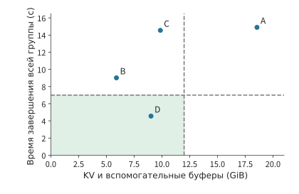
Рисунок 8-35. Сравнение конфигураций для 16 длинных запросов на RTX PRO 6000. По горизонтальной оси отложено потребление памяти KV и вспомогательными буферами после вычета общих весов и базовой рабочей области; по вертикальной — общее время обработки всего batch, выведенное из измерений экспериментов 8-1 и 8-5. Для A недостаточно памяти экземпляра, поэтому на графике показано лишь необходимое ему время. Затенённая область одновременно удовлетворяет ограничениям 12 GiB и 7 секунд. A — BF16 с независимыми контекстами, B — BF16 с общим префиксом, C — q8_0 с независимыми контекстами, D — BF16 с общим префиксом и спекулятивным декодированием.
Наконец, сравним стоимость. Время использования карты на один соответствующий требованиям результат равно времени от поступления всего batch до полного завершения, делённому на число таких результатов. Для D это \(4.56/16\approx0.285\) GPU-секунды; при предельной мощности 600 W энергопотребление на один соответствующий требованиям результат не превышает примерно 171 J. B занимает карту 9,01 секунды, но при лимите в 7 секунд не даёт ни одного соответствующего требованиям результата, поэтому всё это время и энергия расходуются впустую.
Как изменится выбор при уменьшении доступной памяти или сокращении вывода? Если доступная для KV и вспомогательных буферов память уменьшится с 12 GiB до 6 GiB, необходимые D примерно 9,02 GiB уже не поместятся. Требуемые B примерно 5,91 GiB поместятся, но запросы не уложатся в срок. Для этой группы запросов не останется допустимого варианта: придётся увеличить лимит времени, сократить вывод или использовать источник черновиков, не занимающий видеопамять (см. упражнение 8-9). Если объём памяти оставить прежним, но сократить вывод до 16 токенов, B потребуется \(2.04+15\times0.02735=2.45\) секунды, а D — \(2.23+5\times0.02735=2.37\) секунды. Оба варианта завершатся вовремя, причём D будет быстрее лишь на 0,08 секунды: дополнительные 0,19 секунды prefill для черновой модели почти полностью компенсируют время, сэкономленное за счёт исключения 10 раундов decode.
Приведённый выше анализ охватывает время выполнения внутри экземпляра. Чтобы вычислить длительность полной задачи AI-агента, необходимо также учесть выполнение инструментов и внешнее ожидание. Предположим, задача занимает 100 секунд, из которых 50 секунд приходится на decode. Если ускорить decode в четыре раза, общее время составит \(50+50/4=62.5\) секунды, то есть ускорение всей задачи будет равно 1,6 раза. Если изначально decode занимал лишь 20 секунд, общее время станет равным \(80+20/4=85\) секундам, а суммарное ускорение составит всего около 1,18 раза. В общем случае, если доля decode в исходном общем времени равна \(f\), этот этап ускоряется в \(s\) раз, а время остальных этапов не меняется, то по закону Амдала
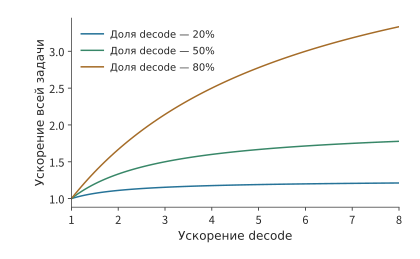
Рисунок 8-36. Кривые ускорения по закону Амдала при фиксированном времени остальных этапов и отсутствии новой подготовительной работы. Для трёх кривых доля decode в базовом времени равна соответственно 20%, 50% и 80%. Чем выше исходная доля времени этого этапа, тем больше выигрыш от его локального ускорения.
На рисунке 8-36 чем меньше доля decode, тем раньше кривая выходит на плато: даже при дальнейшем ускорении этапа генерации вызовы инструментов и прочее ожидание продолжают занимать прежнее время. При сравнении использования ускорителя и энергопотребления необходимо также учитывать эти этапы и вести расчёт по итоговому числу соответствующих требованиям запросов. Пусть суммарное время использования ускорителя за период наблюдения равно \(T_{\mathrm{GPU}}\), общее энергопотребление — \(E_{\mathrm{obs}}\), а число соответствующих требованиям результатов — \(N_g\). Тогда один такой результат в среднем занимает \(T_{\mathrm{GPU}}/N_g\) GPU-времени и расходует \(E_{\mathrm{obs}}/N_g\) энергии. В эксперименте 8-9 на той же карте считывались счётчики энергии GPU и CPU package, то есть всего корпуса процессора: при непрерывной пакетной обработке и интенсивности поступления 1, 4 и 16 req/s на один соответствующий требованиям результат расходовалось соответственно 615,0, 652,0 и 1083,7 J; при последовательном допуске и 4 req/s — 1982,3 J. При 16/s пропускная способность завершения в непрерывном режиме близка к показателю при 4/s, но запоздавших ответов больше, поэтому энергопотребление на один соответствующий требованиям результат примерно на 66% выше. Даже если ответ ошибочен или возвращён слишком поздно, уже израсходованная энергия должна учитываться в общей стоимости.24
Упражнение 8-8 · Расчёт: как ускорение этапа и подготовка черновиков изменяют общее время задачи. Задача длительностью 100 секунд состоит из prefill продолжительностью 20 секунд, decode продолжительностью 50 секунд и выполнения инструментов вместе с ожиданием продолжительностью 30 секунд. По отдельности сократите длительность каждой из трёх частей вдвое и вычислите общее время задачи в каждом случае. Затем, начиная с исходной задачи, сократите время decode до четверти от исходного и добавьте 8 секунд на подготовку черновиков; вычислите итоговый коэффициент ускорения и определите, при какой длительности подготовки это изменение перестанет экономить время.
Упражнение 8-9 · Основное · Комплексное проектирование: сокращение GPU-времени на один соответствующий требованиям результат при ограничениях ёмкости и времени. Используя ёмкость и временные параметры комплексного примера для RTX PRO 6000, постройте на основе B вариант E: общий префикс BF16, черновики подбираются поиском в контексте (раздел 8.5.2), индекс размещается в памяти хоста, не занимает видеопамять и не увеличивает время prefill; каждый запрос в среднем выдаёт 2 токена за раунд, последующее выполнение занимает 128 раундов, а каждый раунд всего batch занимает 27,35 ms плюс 0,1 ms на поиск. Вычислите потребление видеопамяти, общее время и количество GPU-секунд на один соответствующий требованиям результат для E и сравните с B и D. Затем по отдельности измените объём памяти, доступной для KV и вспомогательных буферов, на 6 GiB и длину вывода на 16 токенов и заново выберите вариант. В открытой экспериментальной части запустите две конфигурации с одинаковыми наборами вопросов и траекториями поступления, зарегистрируйте для всех запросов моменты поступления, первого вывода и завершения, правильность и пиковый размер состояния, после чего вычислите эффективную пропускную способность по формулам этого раздела.
История и дальнейшее чтение¶
Приём новых запросов на каждой итерации, страничное внимание и кэширование префиксного дерева способствовали развитию соответственно диспетчеризации запросов, распределения состояния и повторного использования вычислений. Соответствующие решения Orca, PagedAttention и SGLang можно изучать с точки зрения этих механизмов; Sarathi-Serve и NanoFlow дополнительно исследуют разбиение на блоки, конвейерную обработку и перекрытие различных ресурсов.47
Дополнительные сведения о сервисе с несколькими адаптерами из раздела 8.2.1 можно найти в работах Punica и S-LoRA. Они управляют соответственно адаптерами и состоянием запросов, выполняя низкоранговые вычисления каждого адаптера при совместном использовании базовой модели.10
Гибридное внимание и рекуррентные модели расширяют задачу индексирования кэша до восстановления состояния; в таких работах, как Marconi, рассматриваются возможности восстановления и ценность кэша. Выгрузка весов, кодирование тензоров и выполнение с унифицированной памятью, в свою очередь, связывают ёмкость ускорителя со стоимостью канала передачи; сопутствующие записи для M2 Max демонстрируют реальное распределение KV и обработку входных данных малой моделью.121718
Правила принятия и корректировки при спекулятивном сэмплировании заложили основу для сохранения целевого распределения. Последующие методы, формирующие черновик посредством поиска в контексте, прогнозирования по промежуточным признакам или параллельной генерации, главным образом изменяют затраты на один раунд и длину принятого черновика. Полная задача AI-агента также включает инструменты и внешние этапы; опубликованные данные о скорости и выполнении задач можно рассматривать вместе с декомпозицией по этапам из раздела 8.6.2126
Итоги главы¶
В этой главе на примере выполнения отдельного запроса последовательно разбирались взаимосвязи между объёмом памяти, организацией вычислений и эффективностью сервиса. Разные запросы совместно используют веса, тогда как KV-кэш каждого запроса растёт вместе с его контекстом. Формирование batch позволяет сократить объём чтения весов в расчёте на каждый выходной токен, однако для каждого запроса по-прежнему требуется читать его собственный контекст. Выгода зависит от производительности низкоуровневых ресурсов: если веса предоставляются более быстрым отдельным хранилищем, формирование batch больше не позволяет распределить затраты на их чтение, поэтому разные размеры batch и схемы спекулятивного декодирования необходимо сравнивать заново. Непрерывная пакетная обработка своевременно занимает освободившиеся после коротких запросов позиции выполнения, а блочный prefill уменьшает влияние длинного ввода на генерацию уже обрабатываемых запросов.
Способ управления KV-кэшем определяет, сколько запросов экземпляр может обрабатывать одновременно. Страничное управление выделяет пространство по мере необходимости, совместное использование позволяет хранить общую часть префикса только в одном экземпляре, а кэширование префиксов дополнительно устраняет повторные вычисления. Дополнение, изменение и суммаризация контекста влияют на повторное использование кэша, а также на затраты последующего сохранения и чтения состояния. При сравнении этих способов организации контекста с другими методами оптимизации сервиса следует предъявлять одинаковые требования к качеству выполнения задачи. Сжатие дополнительно уменьшает объём хранения, а выгрузка переносит часть весов за пределы ускорителя ценой их многократного перемещения. Спекулятивное декодирование увеличивает затраты на черновую генерацию и проверку, но позволяет за одно вычисление целевой модели определить несколько выходных токенов. Все эти изменения можно сравнивать по объёму используемой памяти, длительности каждого раунда и числу выходных токенов за раунд.
В итоговом комплексном примере сначала проверяется достаточность памяти, затем — возможность завершить работу в срок, после чего сравнивается время GPU, затрачиваемое на каждый результат, соответствующий требованиям. Благодаря совместному использованию префикса 16 длинных запросов, которые прежде не помещались в памяти, теперь могут выполняться одновременно. Однако на RTX PRO 6000 последовательная генерация 256 выходных токенов всё ещё не укладывается в срок; только спекулятивное декодирование сокращает число раундов decode настолько, чтобы запросы завершились вовремя. При уменьшении доступной памяти для этой группы запросов невозможно найти подходящее решение, а при сокращении выходных данных преимущество спекулятивного декодирования почти исчезает. Причины изменения выбора можно найти в выведенных в этой главе объёмах данных, времени выполнения и числе выходных токенов.
После завершения описанного в этой главе сравнения конфигураций следует зафиксировать три типа результатов: состояния скольких запросов можно одновременно хранить при заданных ускорителе, точности и длине запроса; с какой скоростью prefill и decode обрабатывают работу по отдельности; как задержка запросов изменяется в зависимости от размера batch и частоты их поступления. Эти результаты уже учитывают влияние планирования, кэширования и эффективности kernel.
В следующей главе на основе этих результатов определяется, какую работу будут выполнять разные типы ускорителей, сколько потребуется вычислительных блоков и как будет передаваться и совместно использоваться KV-кэш. Несколько ускорителей могут совместно выполнять один экземпляр, образовывать несколько полных реплик либо использоваться как раздельно планируемые пулы сервисов для отдельных этапов. Пакетная обработка определяет, как имеющиеся ресурсы обрабатывают запросы, а способ развёртывания — как между ними распределяется работа; вместе они влияют на производительность всего сервиса.
-
Вычисления с пакетной обработкой для фиксированной модели на RTX PRO 6000 и сравнение с 8K. Полные веса BF16 занимают 16,381,470,720 bytes, идеальный объём однократного чтения общих матричных весов за один шаг составляет 15,136,811,008 bytes; строки embedding выбираются для каждого запроса, однако в памяти всё равно необходимо хранить полную матрицу embedding. Таблица чтения сначала рассчитывается в точных байтах, после чего каждое значение округляется. ↩↩
-
Спецификация NVIDIA RTX Blackwell PRO, приложение A, таблица 4; данные сведены в строку rtx-pro6000-blackwell-ws таблицы параметров оборудования. ↩
-
Исходные записи сканирования batch. RTX PRO 6000, vLLM 0.23.0, BF16, три прогона; в основном тексте приведена медиана, пропускная способность охватывает оставшийся prefill и генерацию, исключая загрузку и прогрев; для условия 8K предварительно создавался общий префикс. ↩
-
Оригинальная статья Orca и блочные вычисления с примечаниями о версиях. ↩↩
-
Фиксированный batch, непрерывная пакетная обработка, стратегия разбиения на блоки. Параметры длительности каждого раунда аппроксимированы по поэтапным записям эксперимента 8-1: один раунд decode для 2K при batch 1 занимает 26.26 ms, а prefill — 94.8 ms; последний выходной токен к моменту завершения запроса ещё не записан в KV. ↩
-
Измерения поблочных вычислений и фиксации состояния. 11 запросов, по 16 блоков в каждом; медианное время первого и последнего блоков составляет 25.30 и 35.07 ms. Интервал CUDA event включает полный путь модели и возможные паузы на стороне хоста, но не внешние logits/сэмплирование. Блоки выполняются в исходном порядке, а входные токены и содержимое меняются от блока к блоку. ↩
-
Обзор OSDI 2025, окончательная версия статьи NanoFlow и пример расчёта совместного использования и размещения ресурсов. ↩↩
-
Натурные измерения для шести запросов и компромиссы при выполнении графов. В эксперименте шесть запросов с синтетическим текстом выполнялись на общей GPU в фиксированном порядке. ↩
-
Страничная организация, отмена и вытеснение, совместное использование четырьмя ветвями, сравнение с холодными ветвями. Результаты общих ветвей совпадают; холодные и горячие ветви имеют одинаковый пиковый объём блоков, но различный объём prefill. ↩↩
-
Восстановление гибридного состояния и расчёт checkpoint, обзор MLSys 2025. Ёмкость Kimi K3 рассчитана для заданного формата хранения и конфигурации параллелизма. ↩↩
-
Кэшированное воспроизведение фактических входных данных за 12 раундов. При воспроизведении используется исходная последовательность входных данных задачи, запросы выполняются последовательно, а на каждом раунде генерируется один токен. ↩
-
Фиксированные файлы модели и рабочий бюджет, а также метаданные шардов 235B. Точные значения в байтах, GB и GiB приведены отдельно. ↩
-
Форматы KV и стоимость выполнения. Материалы охватывают групповые форматы GGML, гранулярность scale для FP8 и результаты аппроксимации на H100. ↩↩
-
Расчёт выгрузки и предварительной загрузки весов; расписание копирования и предварительной загрузки для двух вариантов канала — PCIe Gen5 и NVLink-C2C. Время вычислений одного слоя получено делением 26.26 ms одного раунда decode при batch 1 на 36 слоёв; описание архитектуры GH200: совокупная пропускная способность NVLink-C2C составляет 900 GB/s, по 450 GB/s в каждом направлении. ↩
-
Сжатие и передача тензоров. Материалы охватывают реализацию LLM.265 на видеодвижке, проектирование специализированного оборудования и оценку производительности. ↩↩
-
Данные о ёмкости малой модели на M2 Max и дополнительные измерения для 32K. В каждом слоте последовательно выполняется prefill. ↩
-
Сравнение точности KV и Q, контроль Q при фиксированных весах FP8, данные о ёмкости при конкурентном выполнении. В основном тексте используется группа с весами BF16. В другой группе с фиксированными весами FP8 результаты для BF16 Q и стандартного пути составляют соответственно 32/32 и 28/32. ↩
-
Естественные результаты и стоимость повторных попыток. В эксперименте ответы проверяются по заранее известному результату, а стоимость повторной попытки включает затраты на генерацию первого ошибочного ответа. ↩
-
Оригинальная статья о спекулятивном сэмплировании, оригинальная статья о спекулятивном декодировании, заметки о подсчёте и бюджете фреймворков, охват фреймворков в обзоре. Базовый вероятностный алгоритм, подходы к формированию черновика и конкретные реализации цитируются отдельно. ↩↩↩
-
Расчёт распределения и стоимости черновиков из контекста и результаты полного перебора рациональных чисел. В примере расчёта используется целевое распределение по двум символам; длительность каждого раунда на RTX PRO 6000 приведена для AAAA, BBBB и запроса на 256 токенов с двухсекундным индексированием. Длительность обычного раунда decode, равная 26.26 ms, взята из поэтапных записей эксперимента 8-1, а длительность каждого раунда DFlash — из пошаговых записей эксперимента 8-5. ↩
-
Сравнение DFlash на одном исполнителе и наблюдения за этапами отдельных запросов. В эксперименте заданный набор коротких задач выполнялся в фиксированном порядке при низкой конкурентности. При конкурентности 1 медианное время обычного режима, K7 и K15 для успешно решённых коротких задач составляет соответственно 90.02, 30.58 и 29.43 ms; всего получено 32 пары результатов. ↩
-
Исходные данные о сервисе и энергопотреблении. Одно устройство, восемь задач, по три окна из 16 запросов для каждого из семи условий; ответы на одну и ту же задачу совпадают при разных условиях, а все 42 ошибки относятся к одной задаче. В таблице пропускной способности приведена медиана метрик по окнам. Каждое окно содержит 16 запросов; p95 рассчитывается по позиции с округлением вверх в отсортированном списке и потому равен максимальному значению. Окно подсчёта компонентов NVML и RAPL немного шире окна запросов; другие сервисы продолжали работать. ↩↩
-
Таблица эффективности эксперимента 8-1 экспортирована скриптом расчёта из поэтапных записей сканирования batch; пиковые значения 1792 GB/s и 503.8 TFLOP/s для RTX PRO 6000 взяты из таблицы оборудования. Пик видеопамяти, время до первого токена и длительность каждого раунда DFlash взяты из эксперимента 8-5. Память и время для каждого варианта повторно рассчитаны посредством проверки примера. ↩
-
Эксперимент по генерации и журнал выполнения агента. В журнале агента используются непотоковые вызовы; диаграмма длительности этапов построена по параметрам из условия задачи. ↩
-
Потензорная компоновка Q2_K, размер файлов для 8K и сравнение с 32K. Общий размер файлов составляет 85,691,002,112 bytes, полезная нагрузка кодовых значений/чисел с плавающей точкой — 69,178,275,840 bytes, метаданные квантования — 16,506,720,256 bytes, заголовки файлов и заполнение — 6,006,016 bytes. Приведённые размеры файлов рассчитаны по архивным заголовкам файлов и опубликованным метаданным. ↩
-
Спецификация рабочей станции RTX PRO 6000 Blackwell: системный интерфейс PCIe 5.0 x16 с удвоенной относительно PCIe Gen4 пропускной способностью; спецификация A100 80GB: совокупная пропускная способность PCIe 4.0 на приём и передачу составляет 64 GB/s, то есть 32 GB/s в каждом направлении для x16. Следовательно, для PCIe Gen5 x16 она составляет 64 GB/s в каждом направлении. Расчёты в основном тексте используют номинальные значения и дают нижнюю границу времени передачи. Время повторного вычисления префикса рассчитано по таблице эффективности эксперимента 8-1. ↩
-
Наблюдения за отменой получены из эксперимента с состоянием. Зафиксированы значения около 1.55 ms и 31.41 ms; измеренное время включает накладные расходы наблюдателя. ↩
-
Покомпонентный повторный расчёт сравнений условий в этой главе и программа расчёта. ↩
-
Официальный технический отчёт DeepSeek V4.1, разделы 1, 2, 3 и 6; фиксированные условия межглавного сеанса и повторный расчёт. ↩